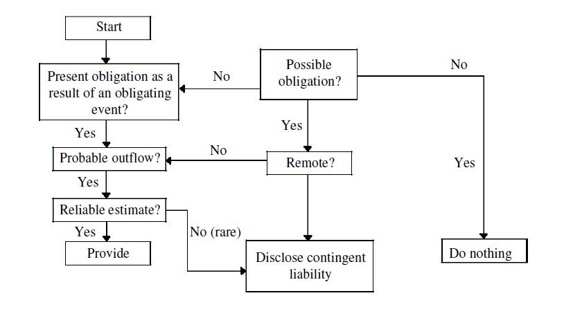

MINISTRY OF CORPORATE AFFAIRS
NOTIFICATION
New Delhi, the 30th March, 2016
G.S.R. 364(E).-In exercise of the powers conferred by clause (a) of sub-section (1) of section 642 of the Companies Act, 1956 (1 of 1956) read with section 210A and sub-section (3C) of section 211 and of the said Act, the Central Government, in consultation with National Advisory Committee on Accounting Standards, hereby makes the following rules to amend the Companies (Accounting Standards) Rules, 2006, namely:-
1. Short title and commencement.- (1) These rules may be called the Companies (Accounting Standards) Amendment Rules, 2016.
2. They shall come into force on the date of their publication in the Official Gazette.
(ii) In the Companies (Accounting Standards) Rules, 2006 (hereinafter referred to as the principal rules), in rule 2,-
(i) for clauses (a) and (b), the following clauses shall be substituted, namely:-
'(a) "Accounting Standards" means the standards of accounting or any addendum thereto as specified in rule 3 of these rules;
(b) "Act" means the Companies Act, 1956 (1 of 1956) or the Companies Act, 2013 (18 of 2013), as the case may be;';
(ii) for clauses (d) and (e), the following clauses shall be substituted, namely:-
'(d) "Financial Statements" means financial statements as defined in sub-section (40) of section 2 of the Companies Act, 2013;
(e) "Enterprise" means a 'company' as defined in sub-section (20) of section 2 of the Companies Act, 2013 or as defined in section 3 of the Companies Act, 196, as the case may be;'.
3. In the principal rules, in rule 4, in sub-rule (2), the words "General Purpose" shall be omitted.
4. In the principals rules, in the ANNEXURE, under the heading
"ACCOUNTING STANDARDS", under the sub-heading "A. General
Instructions", after paragraph 4, the following paragraph shall be
inserted namely:-
5. The reference to 'Schedule VI' or 'Companies Act, 1956' shall mutatis mutandis mean 'Schedule III' and 'Companies Act, 2013', respectively.
5. In the principal rules, in the "ANNEXURE", under the heading "ACCOUNTING STANDARDS" for "Accounting Standard (AS) 2", the following Accounting Standard shall be substituted, namely:-
"Accounting Standard (AS) 2
Valuation of Inventories
(This Accounting Standard includes paragraphs set in bold italic type and plain type, which have equal authority. Paragraphs in bold italic type indicate the main principles. This Accounting Standard should be read in the context of its objective and the General Instructions contained in part A of the Annexure to the Notification.)
Objective
A primary issue in accounting for inventories is the determination of the value at which inventories are carried in the financial statements until the related revenues are recognised. This Standard deals with the determination of such value, including the ascertainment of cost of inventories and any write-down thereof to net realisable value.
Scope
1. This Standard should be applied in accounting for inventories other than:
(a) work in progress arising under construction contracts, including directly related service contracts (see Accounting Standard (AS) 7, Construction Contracts);
(b) work in progress arising in the ordinary course of business of service providers;
(c) shares, debentures and other financial instruments held as stock-in-trade; and
(d) producers' inventories of livestock, agricultural and forest products, and mineral oils, ores and gases to the extent that they are measured at net realisable value in accordance with well-established practices in those industries.
2. The inventories referred to in paragraph 1 (d) are measured at net realisable value at certain stages of production. This occurs, for example, when agricultural crops have been harvested or mineral oils, ores and gases have been extracted and sale is assured under a forward contract or a government guarantee, or when a homogenous market exists and there is a negligible risk of failure to sell. These inventories are excluded from the scope of this Standard.
Definitions
3. The following terms are used in this Standard with the meanings specified:
3.1 Inventories are assets:
(a) held for sale in the ordinary course of business;
(b) in the process of production for such sale; or
(c) in the form of materials or supplies to be consumed in the production process or in the rendering of services.
3.2 Net realisable value is the estimated selling price in the ordinary course of business less the estimated costs of completion and the estimated costs necessary to make the sale.
4. Inventories encompass goods purchased and held for resale, for example, merchandise purchased by a retailer and held for resale, computer software held for resale, or land and other property held for resale. Inventories also encompass finished goods produced, or work in progress being produced, by the enterprise and include materials, maintenance supplies, consumables and loose tools awaiting use in the production process. Inventories do not include spare parts, servicing equipment and standby equipment which meet the definition of property, plant and equipment as per AS 10, Property, Plant and Equipment. Such items are accounted for in accordance with Accounting Standard (AS) 10, Property, Plant and Equipment.
Measurement of Inventories
5. Inventories should be valued at the lower of cost and net realisable value.
Cost of Inventories
6. The cost of inventories should comprise all costs of purchase, costs of conversion and other costs incurred in bringing the inventories to their present location and condition.
Costs of Purchase
7. The costs of purchase consist of the purchase price including duties and taxes (other than those subsequently recoverable by the enterprise from the taxing authorities), freight inwards and other expenditure directly attributable to the acquisition. Trade discounts, rebates, duty drawbacks and other similar items are deducted in determining the costs of purchase.
Costs of Conversion
8. The costs of conversion of inventories include costs directly related to the units of production, such as direct labour. They also include a systematic allocation of fixed and variable production overheads that are incurred in converting materials into finished goods. Fixed production overheads are those indirect costs of production that remain relatively constant regardless of the volume of production, such as depreciation and maintenance of factory buildings and the cost of factory management and administration. Variable production overheads are those indirect costs of production that vary directly, or nearly directly, with the volume of production, such as indirect materials and indirect labour.
9. The allocation of fixed production overheads for the purpose of their inclusion in the costs of conversion is based on the normal capacity of the production facilities. Normal capacity is the production expected to be achieved on an average over a number of periods or seasons under normal circumstances, taking into account the loss of capacity resulting from planned maintenance. The actual level of production may be used if it approximates normal capacity. The amount of fixed production overheads allocated to each unit of production is not increased as a consequence of low production or idle plant. Un allocated overheads are recognised as an expense in the period in which they are incurred. In periods of abnormally high production, the amount of fixed production overheads allocated to each unit of production is decreased so that inventories are not measured above cost. Variable production overheads are assigned to each unit of production on the basis of the actual use of the production facilities.
10. A production process may result in more than one product being produced simultaneously. This is the case, for example, when joint products are produced or when there is a main product and a by-product. When the costs of conversion of each product are not separately identifiable, they are allocated between the products on a rational and consistent basis. The allocation may be based, for example, on the relative sales value of each product either at the stage in the production process when the products become separately identifiable, or at the completion of production. Most by-products as well as scrap or waste materials, by their nature, are immaterial. When this is the case, they are often measured at net realisable value and this value is deducted from the cost of the main product. As a result, the carrying amount of the main product is not materially different from its cost.
Other Costs
11. Other costs are included in the cost of inventories only to the extent that they are incurred in bringing the inventories to their present location and condition. For example, it may be appropriate to include overheads other than production overheads or the costs of designing products for specific customers in the cost of inventories.
12. Interest and other borrowing costs are usually considered as not relating to bringing the inventories to their present location and condition and are, therefore, usually not included in the cost of inventories.
Exclusions from the Cost of Inventories
13. In determining the cost of inventories in accordance with paragraph 6, it is appropriate to exclude certain costs and recognise them as expenses in the period in which they are incurred. Examples of such costs are:
(a) abnormal amounts of wasted materials, labour, or other production costs;
(b) storage costs, unless those costs are necessary in the production process prior to a further production stage;
(c) administrative overheads that do not contribute to bringing the inventories to their present location and condition; and
(d) selling and distribution costs.
Cost Formulas
14. The cost of inventories of items that are not ordinarily interchangeable and goods or services produced and segregated for specific projects should be assigned by specific identification of their individual costs.
15. Specific identification of cost means that specific costs are attributed to identified items of inventory. This is an appropriate treatment for items that are segregated for a specific project, regardless of whether they have been purchased or produced. However, when there are large numbers of items of inventory which are ordinarily interchangeable, specific identification of costs is inappropriate since, in such circumstances, an enterprise could obtain predetermined effects on the net profit or loss for the period by selecting a particular method of ascertaining the items that remain in inventories.
16. The cost of inventories, other than those dealt with in paragraph 14, should be assigned by using the first-in, first-out (FIFO), or weighted average cost formula. The formula used should reflect the fairest possible approximation to the cost incurred in bringing the items of inventory to their present location and condition.
17. A variety of cost formulas is used to determine the cost of inventories other than those for which specific identification of individual costs is appropriate. The formula used in determining the cost of an item of inventory needs to be selected with a view to providing the fairest possible approximation to the cost incurred in bringing the item to its present location and condition. The FIFO formula assumes that the items of inventory which were purchased or produced first are consumed or sold first, and consequently the items remaining in inventory at the end of the period are those most recently purchased or produced. Under the weighted average cost formula, the cost of each item is determined from the weighted average of the cost of similar items at the beginning of a period and the cost of similar items purchased or produced during the period. The average may be calculated on a periodic basis, or as each additional shipment is received, depending upon the circumstances of the enterprise.
Techniques for the Measurement of Cost
18. Techniques for the measurement of the cost of inventories, such as the standard cost method or the retail method, may be used for convenience if the results approximate the actual cost. Standard costs take into account normal levels of consumption of materials and supplies, labour, efficiency and capacity utilisation. They are regularly reviewed and, if necessary, revised in the light of current conditions.
19. The retail method is often used in the retail trade for measuring inventories of large numbers of rapidly changing items that have similar margins and for which it is impracticable to use other costing methods. The cost of the inventory is determined by reducing from the sales value of the inventory the appropriate percentage gross margin. The percentage used takes into consideration inventory which has been marked down to below its original selling price. An average percentage for each retail department is often used.
Net Realisable Value
20. The cost of inventories may not be recoverable if those inventories are damaged, if they have become wholly or partially obsolete, or if their selling prices have declined. The cost of inventories may also not be recoverable if the estimated costs of completion or the estimated costs necessary to make the sale have increased. The practice of writing down inventories below cost to net realisable value is consistent with the view that assets should not be carried in excess of amounts expected to be realised from their sale or use.
21. Inventories are usually written down to net realisable value on an item-by-item basis. In some circumstances, however, it may be appropriate to group similar or related items. This may be the case with items of inventory relating to the same product line that have similar purposes or end uses and are produced and marketed in the same geographical area and cannot be practicably evaluated separately from other items in that product line. It is not appropriate to write down inventories based on a classification of inventory, for example, finished goods, or all the inventories in a particular business segment.
22. Estimates of net realisable value are based on the most reliable evidence available at the time the estimates are made as to the amount the inventories are expected to realise. These estimates take into consideration fluctuations of price or cost directly relating to events occurring after the balance sheet date to the extent that such events confirm the conditions existing at the balance sheet date.
23. Estimates of net realisable value also take into consideration the purpose for which the inventory is held. For example, the net realisable value of the quantity of inventory held to satisfy firm sales or service contracts is based on the contract price. If the sales contracts are for less than the inventory quantities held, the net realisable value of the excess inventory is based on general selling prices. Contingent losses on firm sales contracts in excess of inventory quantities held and contingent losses on firm purchase contracts are dealt with in accordance with the principles enunciated in Accounting Standard (AS) 4, Contingencies and Events Occurring After the Balance Sheet Date.
24. Materials and other supplies held for use in the production of inventories are not written down below cost if the finished products in which they will be incorporated are expected to be sold at or above cost. However, when there has been a decline in the price of materials and it is estimated that the cost of the finished products will exceed net realisable value, the materials are written down to net realisable value. In such circumstances, the replacement cost of the materials may be the best available measure of their net realisable value.
25. An assessment is made of net realisable value as at each balance sheet date.
Disclosure
26. The financial statements should disclose:
(a) the accounting policies adopted in measuring inventories, including the cost formula used; and
(b) the total carrying amount of inventories and its classification appropriate to the enterprise.
27. Information about the carrying amounts held in different classifications of inventories and the extent of the changes in these assets is useful to financial statement users. Common classifications of inventories are:
(a) Raw materials and components
(b) Work-in-progress
(c) Finished goods
(d) Stock-in-trade (in respect of goods acquired for trading)
(e) Stores and spares
(f) Loose tools
(g) Others (specify nature),".
6. In the principal rules, in the "ANNEXURE", under the heading "ACCOUNTING STANDARDS" for "Accounting Standard (AS) 4", the following Accounting Standard shall be substituted, namely:-
"Accounting Standards (AS) 4?
Contingencies and Events Occurring After the Balance Sheet Date
(This Accounting Standard includes paragraphs set in bold italic type and plain type, which have equal authority. Paragraphs in bold italic type indicate the main principles. This Accounting Standard should be read in the context of the General Instructions contained in part A of the Annexure to the Notification.)
Introduction
1. This Standard deals with the treatment in financial statements of
(a) contingencies, and
(b) events occurring after the balance sheet date.
*All paragraphs of this Standard that deal with contingencies are applicable only to the extent not covered by other Accounting Standards prescribed by the Central Government. For example, the impairment of financial assets such as impairment of receivables (commonly known as provision for bad and doubtful debts) is governed by this Standard.
2. The following subjects, which may result in contingencies, are excluded from the scope of this Standard in view of special considerations applicable to them:
(a) liabilities of life assurance and general insurance enterprises arising from policies issued;
(b) obligations under retirement benefit plans; and
(c) commitments arising from long-term lease contracts.
Definitions
3. The following terms are used in this Standard with the meanings specified:
3.1 A contingency is a condition or situation, the ultimate outcome of which, gain or loss, will be known or determined only on the occurrence, or non-occurrence, of one or more uncertain future events.
3.2 Events occurring after the balance sheet date are those significant events, both favourable and unfavourable, that occur between the balance sheet date and the date on which the financial statements are approved by the Board of Directors in the case of a company, and, by the corresponding approving authority in the case of any other entity.
Two types of events can be identified:
(a) those which provide further evidence of conditions that existed at the balance sheet date; and
(b) those which are indicative of conditions that arose subsequent to the balance sheet date.
Explanation
4. Contingencies
4.1 The term "contingencies" used in this Standard is restricted to conditions or situations at the balance sheet date, the financial effect of which is to be determined by future events which may or may not occur.
4.2 Estimates are required for determining the amounts to be stated in the financial statements for many on-going and recurring activities of an enterprise. One must, however, distinguish between an event which is certain and one which is uncertain. The fact that an estimate is involved does not, of itself, create the type of uncertainty which characterises a contingency. For example, the fact that estimates of useful life are used to determine depreciation, does not make depreciation a contingency; the eventual expiry of the useful life of the asset is not uncertain. Also, amounts owed for services received are not contingencies as defined in paragraph 3.1, even though the amounts may have been estimated, as there is nothing uncertain about the fact that these obligations have been incurred.
4.3 The uncertainty relating to future events can be expressed by a range of outcomes. This range may be presented as quantified probabilities, but in most circumstances, this suggests a level of precision that is not supported by the available information. The possible outcomes can, therefore, usually be generally described except where reasonable quantification is practicable.
4.4 The estimates of the outcome and of the financial effect of contingencies are determined by the judgement of the management of the enterprise. This judgement is based on consideration of information available up to the date on which the financial statements are approved and will include a review of events occurring after the balance sheet date, supplemented by experience of similar transactions and, in some cases, reports from independent experts.
5. Accounting Treatment of Contingent Losses
5.1 The accounting treatment of a contingent loss is determined by the expected outcome of the contingency. If it is likely that a contingency will result in a loss to the enterprise, then it is prudent to provide for that loss in the financial statements.
5.2 The estimation of the amount of a contingent loss to be provided for in the financial statements may be based on information referred to in paragraph 4.4.
5.3 If there is conflicting or insufficient evidence for estimating the amount of a contingent loss, then disclosure is made of the existence and nature of the contingency.
5.4 A potential loss to an enterprise may be reduced or avoided because a contingent liability is matched by a related counter-claim or claim against a third party. In such cases, the amount of the provision is determined after taking into account the probable recovery under the claim if no significant uncertainty as to its measurability or collectability exists. Suitable disclosure regarding the nature and gross amount of the contingent liability is also made.
5.5 The existence and amount of guarantees, obligations arising from discounted bills of exchange and similar obligations undertaken by an enterprise are generally disclosed in financial statements by way of note, even though the possibility that a loss to the enterprise will occur, is remote.
5.6 Provisions for contingencies are not made in respect of general or unspecified business risks since they do not relate to conditions or situations existing at the balance sheet date.
6. Accounting Treatment of Contingent Gains
Contingent gains are not recognised in financial statements since their recognition may result in the recognition of revenue which may never be realised. However, when the realisation of a gain is virtually certain, then such gain is not a contingency and accounting for the gain is appropriate.
7. Determination of the Amounts at which Contingencies are included in Financial Statements
7.1 The amount at which a contingency is stated in the financial statements is based on the information which is available at the date on which the financial statements are approved. Events occurring after the balance sheet date that indicate that an asset may have been impaired, or that a liability may have existed, at the balance sheet date are, therefore, taken into account in identifying contingencies and in determining the amounts at which such contingencies are included in financial statements.
7.2 In some cases, each contingency can be separately identified, and the special circumstances of each situation considered in the determination of the amount of the contingency. A substantial legal claim against the enterprise may represent such a contingency. Among the factors taken into account by management in evaluating such a contingency are the progress of the claim at the date on which the financial statements are approved, the opinions, wherever necessary, of legal experts or other advisers, the experience of the enterprise in similar cases and the experience of other enterprises in similar situations.
7.3 If the uncertainties which created a contingency in respect of an individual transaction are common to a large number of similar transactions, then the amount of the contingency need not be individually determined, but may be based on the group of similar transactions. An example of such contingencies may be the estimated uncollectable portion of accounts receivable. Another example of such contingencies may be the warranties for products sold. These costs are usually incurred frequently and experience provides a means by which the amount of the liability or loss can be estimated with reasonable precision although the particular transactions that may result in a liability or a loss are not identified. Provision for these costs results in their recognition in the same accounting period in which the related transactions took place.
8. Events Occurring after the Balance Sheet Date
8.1 Events which occur between the balance sheet date and the date on which the financial statements are approved, may indicate the need for adjustments to assets and liabilities as at the balance sheet date or may require disclosure.
8.2 Adjustments to assets and liabilities are required for events occurring after the balance sheet date that provide additional information materially affecting the determination of the amounts relating to conditions existing at the balance sheet date. For example, an adjustment may be made for a loss on a trade receivable account which is confirmed by the insolvency of a customer which occurs after the balance sheet date.
8.3 Adjustments to assets and liabilities are not appropriate for events occurring after the balance sheet date, if such events do not relate to conditions existing at the balance sheet date. An example is the decline in market value of investments between the balance sheet date and the date on which the financial statements are approved. Ordinary fluctuations in market values do not normally relate to the condition of the investments at the balance sheet date, but reflect circumstances which have occurred in the following period.
8.4 Events occurring after the balance sheet date which do not affect the figures stated in the financial statements would not normally require disclosure in the financial statements although they may be of such significance that they may require a disclosure in the report of the approving authority to enable users of financial statements to make proper evaluations and decisions.
8.5 There are events which, although they take place after the balance sheet date, are sometimes reflected in the financial statements because of statutory requirements or because of their special nature. For example, if dividends are declared after the balance sheet date but before the financial statements are approved for issue, the dividends are not recognised as a liability at the balance sheet date because no obligation exists at that time unless a statute requires otherwise. Such dividends are disclosed in the notes.
8.6 Events occurring after the balance sheet date may indicate that the enterprise ceases to be a going concern. A deterioration in operating results and financial position, or unusual changes affecting the existence or substratum of the enterprise after the balance sheet date (e.g., destruction of a major production plant by a fire after the balance sheet date) may indicate a need to consider whether it is proper to use the fundamental accounting assumption of going concern in the preparation of the financial statements.
9. Disclosure
9.1 The disclosure requirements herein referred to apply only in respect of those contingencies or events which affect the financial position to a material extent.
9.2 If a contingent loss is not provided for, its nature and an estimate of its financial effect are generally disclosed by way of note unless the possibility of a loss is remote (other than the circumstances mentioned in paragraph 5.5). If a reliable estimate of the financial effect cannot be made, this fact is disclosed.
9.3 When the events occurring after the balance sheet date are disclosed in the report of the approving authority, the information given comprises the nature of the events and an estimate of their financial effects or a statement that such an estimate cannot be made.
Main Principles
Contingencies
10. The amount of a contingent loss should be provided for by a charge in the statement of profit and loss if:
(a) it is probable that future events will confirm that, after taking into account any related probable recovery, an asset has been impaired or a liability has been incurred as at the balance sheet date, and
(b) a reasonable estimate of the amount of the resulting loss can be made.
11. The existence of a contingent loss should be disclosed in the financial statements if either of the conditions in paragraph 10 is not met, unless the possibility of a loss is remote.
12. Contingent gains should not be recognised in the financial statements.
Events Occurring after the Balance Sheet Date
13. Assets and liabilities should be adjusted for events occurring after the balance sheet date that provide additional evidence to assist the estimation of amounts relating to conditions existing at the balance sheet date or that indicate that the fundamental accounting assumption of going concern (i.e., the continuance of existence or substratum of the enterprise) is not appropriate.
14. If an enterprise declares dividends to shareholders after the balance sheet date, the enterprise should not recognise those dividends as a liability at the balance sheet date unless a statute requires otherwise. Such dividends should be disclosed in notes.
15. Disclosure should be made in the report of the approving authority of those events occurring after the balance sheet date that represent material changes and commitments affecting the financial position of the enterprise.
Disclosure
16. If disclosure of contingencies is required by paragraph 11 of this Standard, the following information should be provided:
(a) the nature of the contingency;
(b) the uncertainties which may affect the future outcome;
(c) an estimate of the financial effect, or a statement that such an estimate cannot be made.
17. If disclosure of events occurring after the balance sheet date in the report of the approving authority is required by paragraph 15 of this Standard, the following information should be provided:
(a) the nature of the event;
(b) an estimate of the financial effect, or a statement that such an estimate cannot be made".
7. In the principals rules, in the "ANNEXURE", under the heading "ACCOUNTING STANDARDS", Accounting Standard (AS) 6 shall be omitted.
8. In the principal rules, in the "ANNEXURE", under the heading "ACCOUNTING STANDARDS", for Accounting Standard (AS) 10, the following Accounting Standard shall be substituted, namely:-
"Accounting Standard (AS) 10
Property, Plant and Equipment
(This Accounting Standard includes paragraphs set in bold italic type and plain type, which have equal authority. Paragraphs in bold italic type indicate the main principles. This Accounting Standard should be read in the context of the General Instructions contained in part A of the Annexure to the Notification.)
Objective
Scope
(a) biological assets related to agricultural activity other than bearer plants. This Standard applies to bearer plants but it does not apply to the produce on bearer plants; and
(b) wasting assets including mineral rights, expenditure on the exploration for and extraction of minerals, oil, natural gas and similar non-regenerative resources.
However, this Standard applies to property, plant and equipment used to develop or maintain the assets described in
(a) and (b) above.
4. Other Accounting Standards may require recognition of an item of property, plant and equipment based on an approach different from that in this Standard. For example, AS 19, Leases, requires an enterprise to evaluate its recognition of an item of leased property, plant and equipment on the basis of the transfer of risks and rewards. However, in such cases other aspects of the accounting treatment for these assets, including depreciation, are prescribed by this Standard.
5. Investment property, as defined in AS 13, Accounting for Investments, should be accounted for only in accordance with the cost model prescribed in this standard.
Definitions
6. The following terms are used in this Standard with the meanings specified:
Agricultural Activity is the management by an enterprise of the biological transformation and harvest of biological assets for sale or for conversion into agricultural produce or into additional biological assets.
Agricultural Produce is the harvested product of biological assets of the enterprise. Bearer plant is a plant that
(a) is used in the production or supply of agricultural produce;
(b) is expected to bear produce for more than a period of twelve months; and
(c) has a remote likelihood of being sold as agricultural produce, except for incidental scrap sales.
The following are not bearer plants:
(i) plants cultivated to be harvested as agricultural produce (for example, trees grown for use as lumber);
(ii) plants cultivated to produce agricultural produce when there is more than a remote likelihood that the entity will also harvest and sell the plant as agricultural produce, other than as incidental scrap sales (for example, trees that are cultivated both for their fruit and their lumber); and
(iii) annual crops (for example, maize and wheat).
When bearer plants are no longer used to bear produce they might be cut down and sold as scrap, for example, for use as firewood. Such incidental scrap sales would not prevent the plant from satisfying the definition of a bearer plant.
Biological Asset is a living animal1 or plant.
Carrying amount is the amount at which an asset is recognised after deducting any accumulated depreciation and accumulated impairment losses.
Cost is the amount of cash or cash equivalents paid or the fair value of the other consideration given to acquire an asset at the time of its acquisition or construction or, where applicable, the amount attributed to that asset when initially recognised in accordance with the specific requirements of other Accounting Standards.
Depreciable amount is the cost of an asset, or other amount substituted for cost, less its residual value.
Depreciation is the systematic allocation of the depreciable amount of an asset over its useful life.
Enterprise -specific value is the present value of the cash flows an enterprise expects to arise from the continuing use of an asset and from its disposal at the end of its useful life or expects to incur when settling a liability.
Fair value is the amount for which an asset could be exchanged between knowledgeable, willing parties in an arm's length transaction.
Gross carrying amount of an asset is its cost or other amount substituted for the cost in the books of account, without making any deduction for accumulated depreciation and accumulated impairment losses.
An impairment loss is the amount by which the carrying amount of an asset exceeds its recoverable amount.
Property, plant and equipment are tangible items that:
(a) are held for use in the production or supply of goods or services, for rental to others, or for administrative purposes; and
(b) are expected to be used during more than a period of twelve months.
Recoverable amount is the higher of an asset's net selling price and its value in use.
The residual value of an asset is the estimated amount that an enterprise would currently obtain from disposal of the asset, after deducting the estimated costs of disposal, if the asset were already of the age and in the condition expected at the end of its useful life.
Useful life is:
(a) the period over which an asset is expected to be available for use by an enterprise ; or
(b) the number of production or similar units expected to be obtained from the asset by an enterprise.
Recognition
7. The cost of an item of property, plant and equipment should be recognised as an asset if, and only if:
(a) it is probable that future economic benefits associated with the item will flow to the enterprise; and
(b) the cost of the item can be measured reliably.
8. Items such as spare parts, stand-by equipment and servicing equipment are recognised in accordance with this Standard when they meet the definition of property, plant and equipment. Otherwise, such items are classified as inventory.
9. This Standard does not prescribe the unit of measure for recognition, i.e., what constitutes an item of property, plant and equipment. Thus, judgement is required in applying the recognition criteria to specific circumstances of an enterprise. An example of a 'unit of measure' can be a 'project' of construction of a manufacturing plant rather than individual assets comprising the project in appropriate cases for the purpose of capitalisation of expenditure incurred during construction period. Similarly, it may be appropriate to aggregate individually insignificant items, such as moulds, tools and dies and to apply the criteria to the aggregate value. An enterprise may decide to expense an item which could otherwise have been included as property, plant and equipment, because the amount of the expenditure is not material.
1An Accounting Standard on Agriculture is under formulation, which will, inter alia, cover accounting for livestock. Till the time, the Accounting Standard on Agriculture is issued, accounting for livestock meeting the definition of Property, Plant and Equipment, will be covered as per AS 10 (Revised), Property, Plant and Equipment.
10. An enterprise evaluates under this recognition principle all its costs on property, plant and equipment at the time they are incurred. These costs include costs incurred:
(a) initially to acquire or construct an item of property, plant and equipment; and
(b) subsequently to add to, replace part of, or service it.
Initial Costs
11. The definition of 'property, plant and equipment' covers tangible items which are held for use or for administrative purposes. The term 'administrative purposes' has been used in wider sense to include all business purposes other than production or supply of goods or services or for rental for others. Thus, property, plant and equipment would include assets used for selling and distribution, finance and accounting, personnel and other functions of an enterprise. Items of property, plant and equipment may also be acquired for safety or environmental reasons. The acquisition of such property, plant and equipment, although not directly increasing the future economic benefits of any particular existing item of property, plant and equipment, may be necessary for an enterprise to obtain the future economic benefits from its other assets. Such items of property, plant and equipment qualify for recognition as assets because they enable an enterprise to derive future economic benefits from related assets in excess of what could be derived had those items not been acquired. For example, a chemical manufacturer may install new chemical handling processes to comply with environmental requirements for the production and storage of dangerous chemicals; related plant enhancements are recognised as an asset because without them the enterprise is unable to manufacture and sell chemicals. The resulting carrying amount of such an asset and related assets is reviewed for impairment in accordance with AS 28, Impairment of Assets.
Subsequent Costs
12. Under the recognition principle in paragraph 7, an enterprise does not recognise in the carrying amount of an item of property, plant and equipment the costs of the day-to-day servicing of the item. Rather, these costs are recognised in the statement of profit and loss as incurred. Costs of day-to-day servicing are primarily the costs of labour and consumables, and may include the cost of small parts. The purpose of such expenditures is often described as for the 'repairs and maintenance' of the item of property, plant and equipment.
13. Parts of some items of property, plant and equipment may require replacement at regular intervals. For example, a furnace may require relining after a specified number of hours of use, or aircraft interiors such as seats and galleys may require replacement several times during the life of the airframe. Similarly, major parts of conveyor system, such as, conveyor belts, wire ropes, etc., may require replacement several times during the life of the conveyor system. Items of property, plant and equipment may also be acquired to make a less frequently recurring replacement, such as replacing the interior walls of a building, or to make a non-recurring replacement. Under the recognition principle in paragraph 7, an enterprise recognises in the carrying amount of an item of property, plant and equipment the cost of replacing part of such an item when that cost is incurred if the recognition criteria are met. The carrying amount of those parts that are replaced is derecognised in accordance with the derecognition provisions of this Standard (see paragraphs 74-80).
14. A condition of continuing to operate an item of property, plant and equipment (for example, an aircraft) may be performing regular major inspections for faults regardless of whether parts of the item are replaced. When each major inspection is performed, its cost is recognised in the carrying amount of the item of property, plant and equipment as a replacement if the recognition criteria are satisfied. Any remaining carrying amount of the cost of the previous inspection (as distinct from physical parts) is derecognised.
15. The derecognition of the carrying amount as stated in paragraphs 13-14 occurs regardless of whether the cost of the previous part / inspection was identified in the transaction in which the item was acquired or constructed. If it is not practicable for an enterprise to determine the carrying amount of the replaced part/ inspection, it may use the cost of the replacement or the estimated cost of a future similar inspection as an indication of what the cost of the replaced part/ existing inspection component was when the item was acquired or constructed.
Measurement at Recognition
16. An item of property, plant and equipment that qualifies for recognition as an asset should be measured at its cost.
Elements of Cost
17. The cost of an item of property, plant and equipment comprises:
(a) its purchase price, including import duties and non -refundable purchase taxes,, after deducting trade discounts and rebates.
(b) any costs directly attributable to bringing the asset to the location and condition necessary for it to be capable of operating in the manner intended by management.
(c) the initial estimate of the costs of dismantling, removing the item and restoring the site on which it is located, referred to as 'decommissioning, restoration and similar liabilities', the obligation for which an enterprise incurs either when the item is acquired or as a consequence of having used the item during a particular period for purposes other than to produce inventories during that period.
18. Examples of directly attributable costs are:
(a) costs of employee benefits (as defined in AS 15, Employee Benefits) arising directly from the construction or acquisition of the item of property, plant and equipment;
(b) costs of site preparation;
(c) initial delivery and handling costs;
(d) installation and assembly costs;
(e) costs of testing whether the asset is functioning properly, after deducting the net proceeds from selling any items produced while bringing the asset to that location and condition (such as samples produced when testing equipment); and
(f) professional fees.
19. An enterprise applies AS 2, Valuation of Inventories, to the costs of obligations for dismantling, removing and restoring the site on which an item is located that are incurred during a particular period as a consequence of having used the item to produce inventories during that period. The obligations for costs accounted for in accordance with AS 2 or AS 10 are recognised and measured in accordance with AS 29, Provisions, Contingent Liabilities and Contingent Assets.
20. Examples of costs that are not costs of an item of property, plant and equipment are:
(a) costs of opening a new facility or business, such as, inauguration costs;
(b) costs of introducing a new product or service( including costs of advertising and promotional activities);
(c) costs of conducting business in a new location or with a new class of customer (including costs of staff training); and
(d) administration and other general overhead costs.
21. Recognition of costs in the carrying amount of an item of property, plant and equipment ceases when the item is in the location and condition necessary for it to be capable of operating in the manner intended by management. Therefore, costs incurred in using or redeploying an item are not included in the carrying amount of that item. For example, the following costs are not included in the carrying amount of an item of property, plant and equipment:
(a) costs incurred while an item capable of operating in the manner intended by management has yet to be brought into use or is operated at less than full capacity;
(b) initial operating losses, such as those incurred while demand for the output of an item builds up; and
(c) costs of relocating or reorganising part or all of the operations of an enterprise.
22. Some operations occur in connection with the construction or development of an item of property, plant and equipment, but are not necessary to bring the item to the location and condition necessary for it to be capable of operating in the manner intended by management. These incidental operations may occur before or during the construction or development activities. For example, income may be earned through using a building site as a car park until construction starts. Because incidental operations are not necessary to bring an item to the location and condition necessary for it to be capable of operating in the manner intended by management, the income and related expenses of incidental operations are recognised in the statement of profit and loss and included in their respective classifications of income and expense.
23. The cost of a self-constructed asset is determined using the same principles as for an acquired asset. If an enterprise makes similar assets for sale in the normal course of business, the cost of the asset is usually the same as the cost of constructing an asset for sale (see AS 2). Therefore, any internal profits are eliminated in arriving at such costs. Similarly, the cost of abnormal amounts of wasted material, labour, or other resources incurred in self-constructing an asset is not included in the cost of the asset. AS 16, Borrowing Costs, establishes criteria for the recognition of interest as a component of the carrying amount of a self-constructed item of property, plant and equipment.
24. Bearer plants are accounted for in the same way as self-constructed items of property, plant and equipment before they are in the location and condition necessary to be capable of operating in the manner intended by management. Consequently, references to 'construction' in this Standard should be read as covering activities that are necessary to cultivate the bearer plants before they are in the location and condition necessary to be capable of operating in the manner intended by management.
Measurement of Cost
25. The cost of an item of property, plant and equipment is the cash price equivalent at the recognition date. If payment is deferred beyond normal credit terms, the difference between the cash price equivalent and the total payment is recognised as interest over the period of credit unless such interest is capitalised in accordance with AS 16.
26. One or more items of property, plant and equipment may be acquired in exchange for a non-monetary asset or assets, or a combination of monetary and non-monetary assets. The following discussion refers simply to an exchange of one non-monetary asset for another, but it also applies to all exchanges described in the preceding sentence. The cost of such an item of property, plant and equipment is measured at fair value unless (a) the exchange transaction lacks commercial substance or (b) the fair value of neither the asset(s) received nor the asset(s) given up is reliably measurable. The acquired item(s) is/are measured in this manner even if an enterprise cannot immediately derecognise the asset given up. If the acquired item(s) is/are not measured at fair value, its/their cost is measured at the carrying amount of the asset(s) given up.
27. An enterprise determines whether an exchange transaction has commercial substance by considering the extent to which its future cash flows are expected to change as a result of the transaction. An exchange transaction has commercial substance if:
(a) the configuration (risk, timing and amount) of the cash flows of the asset received differs from the configuration of the cash flows of the asset transferred; or
(b) the enterprise-specific value of the portion of the operations of the enterprise affected by the transaction changes as a result of the exchange;
(c) and the difference in (a) or (b) is significant relative to the fair value of the assets exchanged.
For the purpose of determining whether an exchange transaction has commercial substance, the enterprise - specific value of the portion of operations of the enterprise affected by the transaction should reflect post-tax cash flows. In certain cases, the result of these analyses may be clear without an enterprise having to perform detailed calculations.
28. The fair value of an asset is reliably measurable if (a) the variability in the range of reasonable fair value measurements is not significant for that asset or (b) the probabilities of the various estimates within the range can be reasonably assessed and used when measuring fair value. If an enterprise is able to measure reliably the fair value of either the asset received or the asset given up, then the fair value of the asset given up is used to measure the cost of the asset received unless the fair value of the asset received is more clearly evident.
29. Where several items of property, plant and equipment are purchased for a consolidated price, the consideration is apportioned to the various items on the basis of their respective fair values at the date of acquisition. In case the fair values of the items acquired cannot be measured reliably, these values are estimated on a fair basis as determined by competent valuers.
30. The cost of an item of property, plant and equipment held by a lessee under a finance lease is determined in accordance with AS 19, Leases.
31. The carrying amount of an item of property, plant and equipment may be reduced by government grants in accordance with AS 12, Accounting for Government Grants.
Measurement after Recognition
32. An enterprise should choose either the cost model in paragraph 33 or the revaluation model in paragraph 34 as its accounting policy and should apply that policy to an entire class of property, plant and equipment.
Cost Model
33. After recognition as an asset, an item of property, plant and equipment should be carried at its cost less any accumulated depreciation and any accumulated impairment losses.
Revaluation Model
34. After recognition as an asset, an item of property, plant and equipment whose fair value can be measured reliably should be carried at a revalued amount, being its fair value at the date of the revaluation less any subsequent accumulated depreciation and subsequent accumulated impairment losses. Revaluations should be made with sufficient regularity to ensure that the carrying amount does not differ materially from that which would be determined using fair value at the balance sheet date.
35. The fair value of items of property, plant and equipment is usually determined from market-based evidence by appraisal that is normally undertaken by professionally qualified valuers.
36. If there is no market-based evidence of fair value because of the specialised nature of the item of property, plant and equipment and the item is rarely sold, except as part of a continuing business, an enterprise may need to estimate fair value using an income approach (for example, based on discounted cash flow projections) or a depreciated replacement cost approach which aims at making a realistic estimate of the current cost of acquiring or constructing an item that has the same service potential as the existing item.
37. The frequency of revaluations depends upon the changes in fair values of the items of property, plant and equipment being revalued. When the fair value of a revalued asset differs materially from its carrying amount, a further revaluation is required. Some items of property, plant and equipment experience significant and volatile changes in fair value, thus necessitating annual revaluation. Such frequent revaluations are unnecessary for items of property, plant and equipment with only insignificant changes in fair value. Instead, it may be necessary to revalue the item only every three or five years.
38. When an item of property, plant and equipment is revalued, the carrying amount of that asset is adjusted to the revalued amount. At the date of the revaluation, the asset is treated in one of the following ways:
(a) the gross carrying amount is adjusted in a manner that is consistent with the revaluation of the carrying amount of the asset. For example, the gross carrying amount may be restated by reference to observable market data or it may be restated proportionately to the change in the carrying amount. The accumulated depreciation at the date of the revaluation is adjusted to equal the difference between the gross carrying amount and the carrying amount of the asset after taking into account accumulated impairment losses; or
(b) the accumulated depreciation is eliminated against the gross carrying amount of the asset.
The amount of the adjustment of accumulated depreciation forms part of the increase or decrease in carrying amount that is accounted for in accordance with paragraphs 42 and 43.
39. If an item of property, plant and equipment is revalued, the entire class of property, plant and equipment to which that asset belongs should be revalued.
40. A class of property, plant and equipment is a grouping of assets of a similar nature and use in operations of an enterprise. The following are examples of separate classes:
(a) land;
(b) land and buildings;
(c) machinery;
(d) ships;
(e) aircraft;
(f) motor vehicles;
(g) furniture and fixtures;
(h) office equipment;and
(i) bearer plants.
41. The items within a class of property, plant and equipment are revalued simultaneously to avoid selective revaluation of assets and the reporting of amounts in the financial statements that are a mixture of costs and values as at different dates. However, a class of assets may be revalued on a rolling basis provided revaluation of the class of assets is completed within a short period and provided the revaluations are kept up to date.
42. An increase in the carrying amount of an asset arising on revaluation should be credited directly to owners' interests under the heading of revaluation surplus However, the increase should be recognised in the statement of profit and loss to the extent that it reverses a revaluation decrease of the same asset previously recognised in the statement of profit and loss.
43. A decrease in the carrying amount of an asset arising on revaluation should be charged to the statement of profit and loss. However, the decrease should be debited directly to owners' interests under the heading of revaluation surplus to the extent of any credit balance existing in the revaluation surplus in respect of that asset.
44. The revaluation surplus included in owners' interests in respect of an item of property, plant and equipment may be transferred to the revenue reserves when the asset is derecognised. This may involve transferring the whole of the surplus when the asset is retired or disposed of. However, some of the surplus may be transferred as the asset is used by an enterprise. In such a case, the amount of the surplus transferred would be the difference between depreciation based on the revalued carrying amount of the asset and depreciation based on its original cost. Transfers from revaluation surplus to the revenue reserves are not made through the statement of profit and loss.
Depreciation
45. Each part of an item of property, plant and equipment with a cost that is significant in relation to the total cost of the item should be depreciated separately.
46. An enterprise allocates the amount initially recognised in respect of an item of property, plant and equipment to its significant parts and depreciates each such part separately. For example, it may be appropriate to depreciate separately the airframe and engines of an aircraft, whether owned or subject to a finance lease.
47. A significant part of an item of property, plant and equipment may have a useful life and a depreciation method that are the same as the useful life and the depreciation method of another significant part of that same item. Such parts may be grouped in determining the depreciation charge.
48. To the extent that an enterprise depreciates separately some parts of an item of property, plant and equipment, it also depreciates separately the remainder of the item. The remainder consists of the parts of the item that are individually not significant. If an enterprise has varying expectations for these parts, approximation techniques may be necessary to depreciate the remainder in a manner that faithfully represents the consumption pattern and/or useful life of its parts.
49. An enterprise may choose to depreciate separately the parts of an item that do not have a cost that is significant in relation to the total cost of the item.
50. The depreciation charge for each period should be recognised in the statement of profit and loss unless it is included in the carrying amount of another asset.
51. The depreciation charge for a period is usually recognised in the statement of profit and loss. However, sometimes, the future economic benefits embodied in an asset are absorbed in producing other assets. In this case, the depreciation charge constitutes part of the cost of the other asset and is included in its carrying amount. For example, the depreciation of manufacturing plant and equipment is included in the costs of conversion of inventories (see AS 2). Similarly, the depreciation of property, plant and equipment used for development activities may be included in the cost of an intangible asset recognised in accordance with AS 26, Intangible Assets.
Depreciable Amount and Depreciation Period
52. The depreciable amount of an asset should be allocated on a systematic basis over its useful life.
53. The residual value and the useful life of an asset should be reviewed at least at each financial year-end and, if expectations differ from previous estimates, the change(s) should be accounted for as a change in an accounting estimate in accordance with AS 5, Net Profit or Loss for the Period, Prior Period Items and Changes in Accounting Policies.
54. Depreciation is recognised even if the fair value of the asset exceeds its carrying amount, as long as the asset's residual value does not exceed its carrying amount. Repair and maintenance of an asset do not negate the need to depreciate it.
55. The depreciable amount of an asset is determined after deducting its residual value.
56. The residual value of an asset may increase to an amount equal to or greater than its carrying amount. If it does, depreciation charge of the asset is zero unless and until its residual value subsequently decreases to an amount below its carrying amount.
57. Depreciation of an asset begins when it is available for use, i.e., when it is in the location and condition necessary for it to be capable of operating in the manner intended by management. Depreciation of an asset ceases at the earlier of the date that the asset is retired from active use and is held for disposal and the date that the asset is derecognised. Therefore, depreciation does not cease when the asset becomes idle or is retired from active use (but not held for disposal) unless the asset is fully depreciated. However, under usage methods of depreciation, the depreciation charge can be zero while there is no production.
58. The future economic benefits embodied in an asset are consumed by an enterprise principally through its use. However, other factors, such as technical or commercial obsolescence and wear and tear while an asset remains idle, often result in the diminution of the economic benefits that might have been obtained from the asset. Consequently, all the following factors are considered in determining the useful life of an asset:
(a) expected usage of the asset. Usage is assessed by reference to the expected capacity or physical output of the asset.
(b) expected physical wear and tear, which depends on operational factors such as the number of shifts for which the asset is to be used and the repair and maintenance programme, and the care and maintenance of the asset while idle.
(c) technical or commercial obsolescence arising from changes or improvements in production, or from a change in the market demand for the product or service output of the asset. Expected future reductions in the selling price of an item that was produced using an asset could indicate the expectation of technical or commercial obsolescence of the asset, which, in turn, might reflect a reduction of the future economic benefits embodied in the asset.
(d) legal or similar limits on the use of the asset, such as the expiry dates of related leases.
59. The useful life of an asset is defined in terms of its expected utility to the enterprise. The asset management policy of the enterprise may involve the disposal of assets after a specified time or after consumption of a specified proportion of the future economic benefits embodied in the asset. Therefore, the useful life of an asset may be shorter than its economic life. The estimation of the useful life of the asset is a matter of judgement based on the experience of the enterprise with similar assets.
60. Land and buildings are separable assets and are accounted for separately, even when they are acquired together. With some exceptions, such as quarries and sites used for landfill, land has an unlimited useful life and therefore is not depreciated. Buildings have a limited useful life and therefore are depreciable assets. An increase in the value of the land on which a building stands does not affect the determination of the depreciable amount of the building.
61. If the cost of land includes the costs of site dismantlement, removal and restoration, that portion of the land asset is depreciated over the period of benefits obtained by incurring those costs. In some cases, the land itself may have a limited useful life, in which case it is depreciated in a manner that reflects the benefits to be derived from it.
Depreciation Method
62. The depreciation method used should reflect the pattern in which the future economic benefits of the asset are expected to be consumed by the enterprise.
63. The depreciation method applied to an asset should be reviewed at least at each financial year-end and, if there has been a significant change in the expected pattern of consumption of the future economic benefits embodied in the asset, the method should be changed to reflect the changed pattern. Such a change should be accounted for as a change in an accounting estimate in accordance with AS 5.
64. A variety of depreciation methods can be used to allocate the depreciable amount of an asset on a systematic basis over its useful life. These methods include the straight-line method, the diminishing balance method and the units of production method. Straight-line depreciation results in a constant charge over the useful life if the residual value of the asset does not change. The diminishing balance method results in a decreasing charge over the useful life. The units of production method results in a charge based on the expected use or output. The enterprise selects the method that most closely reflects the expected pattern of consumption of the future economic benefits embodied in the asset. That method is applied consistently from period to period unless there is a change in the expected pattern of consumption of those future economic benefits or that the method is changed in accordance with the statute to best reflect the way the asset is consumed.
65. A depreciation method that is based on revenue that is generated by an activity that includes the use of an asset is not appropriate. The revenue generated by an activity that includes the use of an asset generally reflects factors other than the consumption of the economic benefits of the asset. For example, revenue is affected by other inputs and processes, selling activities and changes in sales volumes and prices. The price component of revenue may be affected by inflation, which has no bearing upon the way in which an asset is consumed.
Changes in Existing Decommissioning, Restoration and Other Liabilities
66. The cost of property, plant and equipment may undergo changes subsequent to its acquisition or construction on account of changes in liabilities, price adjustments, changes in duties, changes in initial estimates of amounts provided for dismantling, removing, restoration and similar factors and included in the cost of the asset in accordance with paragraph 16. Such changes in cost should be accounted for in accordance with paragraphs 67-68 below.
67. If the related asset is measured using the cost model:
(a) subject to (b), changes in the liability should be added to, or deducted from, the cost of the related asset in the current period.
(b) the amount deducted from the cost of the asset should not exceed its carrying amount. If a decrease in the liability exceeds the carrying amount of the asset, the excess should be recognised immediately in the statement of profit and loss.
(c) if the adjustment results in an addition to the cost of an asset, the enterprise should consider whether this is an indication that the new carrying amount of the asset may not be fully recoverable. If it is such an indication, the enterprise should test the asset for impairment by estimating its recoverable amount, and should account for any impairment loss, in accordance with AS 28.
68. If the related asset is measured using the revaluation model:
(a) changes in the liability alter the revaluation surplus or deficit previously recognised on that asset, so that:
(i) a decrease in the liability should (subject to (b)) be credited directly to revaluation surplus in the owners' interest, except that it should be recognised in the statement of profit and loss to the extent that it reverses a revaluation deficit on the asset that was previously recognised in the statement of profit and loss;
(ii) an increase in the liability should be recognised in the statement of profit and loss, except that it should be debited directly to revaluation surplus in the owners' interest to the extent of any credit balance existing in the revaluation surplus in respect of that asset.
(b) in the event that a decrease in the liability exceeds the carrying amount that would have been recognised had the asset been carried under the cost model, the excess should be recognised immediately in the statement of profit and loss.
(c) a change in the liability is an indication that the asset may have to be revalued in order to ensure that the carrying amount does not differ materially from that which would be determined using fair value at the balance sheet date. Any such revaluation should be taken into account in determining the amounts to be taken to the statement of profit and loss and the owners' interest under (a). If a revaluation is necessary, all assets of that class should be revalued.
69. The adjusted depreciable amount of the asset is depreciated over its useful life. Therefore, once the related asset has reached the end of its useful life, all subsequent changes in the liability should be recognised in the statement of profit and loss as they occur. This applies under both the cost model and the revaluation model.
Impairment
70. To determine whether an item of property, plant and equipment is impaired, an enterprise applies AS 28, Impairment of Assets. AS 28 explains how an enterprise reviews the carrying amount of its assets, how it determines the recoverable amount of an asset, and when it recognises, or reverses the recognition of, an impairment loss.
Compensation for Impairment
71. Compensation from third parties for items of property, plant and equipment that were impaired, lost or given up should be included in the statement of profit and loss when the compensation becomes receivable.
72. Impairments or losses of items of property, plant and equipment, related claims for or payments of compensation from third parties and any subsequent purchase or construction of replacement assets are separate economic events and are accounted for separately as follows:
(a) impairments of items of property, plant and equipment are recognised in accordance with AS 28;
(b) derecognition of items of property, plant and equipment retired or disposed of is determined in accordance with this Standard;
(c) compensation from third parties for items of property, plant and equipment that were impaired, lost or given up is included in determining profit or loss when it becomes receivable; and
(d) the cost of items of property, plant and equipment restored, purchased or constructed as replacements is determined in accordance with this Standard.
Retirements
73. Items of property, plant and equipment retired from active use and held for disposal should be stated at the lower of their carrying amount and net realisable value. Any write-down in this regard should be recognised immediately in the statement of profit and loss.
Derecognition
74. The carrying amount of an item of property, plant and equipment should be derecognised
(a) on disposal; or
(b) when no future economic benefits are expected from its use or disposal.
75. The gain or loss arising from the derecognition of an item of property, plant and equipment should be included in the statement of profit and loss when the item is derecognised (unless AS 19, Leases, requires otherwise on a sale and leaseback). Gains should not be classified as revenue, as defined in AS 9, Revenue Recognition.
76. However, an enterprise that in the course of its ordinary activities, routinely sells items of property, plant and equipment that it had held for rental to others should transfer such assets to inventories at their carrying amount when they cease to be rented and become held for sale. The proceeds from the sale of such assets should be recognised in revenue in accordance with AS 9, Revenue Recognition.
77. The disposal of an item of property, plant and equipment may occur in a variety of ways (e.g. by sale, by entering into a finance lease or by donation). In determining the date of disposal of an item, an enterprise applies the criteria in AS 9 for recognising revenue from the sale of goods. AS 19, Leases, applies to disposal by a sale and leaseback.
78. If, under the recognition principle in paragraph 7, an enterprise recognises in the carrying amount of an item of property, plant and equipment the cost of a replacement for part of the item, then it derecognises the carrying amount of the replaced part regardless of whether the replaced part had been depreciated separately. If it is not practicable for an enterprise to determine the carrying amount of the replaced part, it may use the cost of the replacement as an indication of what the cost of the replaced part was at the time it was acquired or constructed.
79. The gain or loss arising from the derecognition of an item of property, plant and equipment should be determined as the difference between the net disposal proceeds, if any, and the carrying amount of the item.
80. The consideration receivable on disposal of an item of property, plant and equipment is recognised in accordance with the principles enunciated in AS 9.
Disclosure
81. The financial statements should disclose, for each class of property, plant and equipment:
(a) the measurement bases (i.e., cost model or revaluation model) used for determining the gross carrying amount;
(b) the depreciation methods used;
(c) the useful lives or the depreciation rates used. In case the useful lives or the depreciation rates used are different from those specified in the statute governing the enterprise, it should make a specific mention of that fact;
(d) the gross carrying amount and the accumulated depreciation (aggregated with accumulated impairment losses) at the beginning and end of the period; and
(e) a reconciliation of the carrying amount at the beginning and end of the period showing:
(i) additions;
(ii) assets retired from active use and held for disposal;
(iii) acquisitions through business combinations ;
(iv) increases or decreases resulting from revaluations under paragraphs 34, 42 and 43 and from impairment losses recognised or reversed directly in revaluation surplus in accordance with AS 28;
(v) impairment losses recognised in the statement of profit and loss in accordance with AS
28;
(vi) impairment losses reversed in the statement of profit and loss in accordance with AS 28;
(vii) depreciation;
(viii) the net exchange differences arising on the translation of the financial statements of a non-integral foreign operation in accordance with AS 11, The Effects of Changes in Foreign Exchange Rates; and
(ix) other changes.
82. The financial statements should also disclose:
(a) the existence and amounts of restrictions on title, and property, plant and equipment pledged as security for liabilities;
(b) the amount of expenditure recognised in the carrying amount of an item of property, plant and equipment in the course of its construction;
(c) the amount of contractual commitments for the acquisition of property, plant and equipment;
(d) if it is not disclosed separately on the face of the statement of profit and loss, the amount of compensation from third parties for items of property, plant and equipment that were impaired, lost or given up that is included in the statement of profit and loss; and
(e) the amount of assets retired from active use and held for disposal.
83. Selection of the depreciation method and estimation of the useful life of assets are matters of judgement. Therefore, disclosure of the methods adopted and the estimated useful lives or depreciation rates provides users of financial statements with information that allows them to review the policies selected by management and enables comparisons to be made with other enterprises. For similar reasons, it is necessary to disclose:
(a) depreciation, whether recognised in the statement of profit and loss or as a part of the cost of other assets, during a period; and
(b) accumulated depreciation at the end of the period.
84. In accordance with AS 5, an enterprise discloses the nature and effect of a change in an accounting estimate that has an effect in the current period or is expected to have an effect in subsequent periods. For property, plant and equipment, such disclosure may arise from changes in estimates with respect to:
(a) residual values;
(b) the estimated costs of dismantling, removing or restoring items of property, plant and equipment;
(c) useful lives; and
(d) depreciation methods.
85. If items of property, plant and equipment are stated at revalued amounts, the following should be disclosed:
(a) the effective date of the revaluation;
(b) whether an independent valuer was involved;
(c) the methods and significant assumptions applied in estimating fair values of the items;
(d) the extent to which fair values of the items were determined directly by reference to observable prices in an active market or recent market transactions on arm's length terms or were estimated using other valuation techniques; and
(e) the revaluation surplus, indicating the change for the period and any restrictions on the distribution of the balance to shareholders.
86. In accordance with AS 28, an enterprise discloses information on impaired property, plant and equipment in addition to the information required by paragraph 81 (e), (iv), (v) and (vi).
87. An enterprise is encouraged to disclose the following:
(a) the carrying amount of temporarily idle property, plant and equipment;
(b) the gross carrying amount of any fully depreciated property, plant and equipment that is still in use;
(c) for each revalued class of property, plant and equipment, the carrying amount that would have been recognised had the assets been carried under the cost model;
(d) the carrying amount of property, plant and equipment retired from active use and not held for disposal.
Transitional Provisions
88. Where an entity has in past recognized an expenditure in the statement of profit and loss which is eligible to be included as a part of the cost of a project for construction of property, plant and equipment in accordance with the requirements of paragraph 9, it may do so retrospectively for such a project. The effect of such retrospective application of this requirement, should be recognised net-of-tax in revenue reserves.
89. The requirements of paragraphs 26-28 regarding the initial measurement of an item of property, plant and equipment acquired in an exchange of assets transaction should be applied prospectively only to transactions entered into after this Standard becomes mandatory.
90. On the date of this Standard becoming mandatory, the spare parts, which hitherto were being treated as inventory under AS 2, Valuation of Inventories, and are now required to be capitalised in accordance with the requirements of this Standard, should be capitalised at their respective carrying amounts. The spare parts so capitalised should be depreciated over their remaining useful lives prospectively as per the requirements of this Standard.
91. The requirements of paragraph 32 and paragraphs 34 - 44 regarding the revaluation model should be applied prospectively. In case, on the date of this Standard becoming mandatory, an enterprise does not adopt the revaluation model as its accounting policy but the carrying amount of item(s) of property, plant and equipment reflects any previous revaluation it should adjust the amount outstanding in the revaluation reserve against the carrying amount of that item. However, the carrying amount of that item should never be less than residual value. Any excess of the amount outstanding as revaluation reserve over the carrying amount of that item should be adjusted in revenue reserves".
9. In the principal rules, in the "ANNEXURE", under the heading "ACCOUNTING STANDARDS", for Accounting Standard (AS) 13, the following Accounting Standard shall be substituted, namely:-
"Accounting Standard (AS) 13
Accounting for Investments
(This Accounting Standard includes paragraphs set in bold italic type and plain type, which have equal authority. Paragraphs in bold italic type indicate the main principles. This Accounting Standard should be read in the context of the General Instructions contained in part A of the Annexure to the Notification.)
Introduction
1. This Standard deals with accounting for investments in the financial statements of enterprises and related disclosure requirements.2
2. This Standard does not deal with:
(a) the bases for recognition of interest, dividends and rentals earned on investments which are covered by Accounting Standard 9 on Revenue Recognition;
(b) operating or finance leases;
(c) investments of retirement benefit plans and life insurance enterprises; and
(d) mutual funds and venture capital funds and/or the related asset management companies, banks and public financial institutions formed under a Central or State Government Act or so declared under the Companies Act, 2013.
Definitions
3. The following terms are used in this Standard with the meanings assigned:
3.1 Investments are assets held by an enterprise for earning income by way of dividends, interest, and rentals, for capital appreciation, or for other benefits to the investing enterprise. Assets held as stock-in-trade are not 'investments'.
3.2 A current investment is an investment that is by its nature readily realisable and is intended to be held for not more than one year from the date on which such investment is made.
3.3 A long term investment is an investment other than a current investment.
3.4 An investment property is an investment in land or buildings that are not intended to be occupied substantially for use by, or in the operations of, the investing enterprise.
3.5 Fair value is the amount for which an asset could be exchanged between a knowledgeable, willing buyer and a knowledgeable, willing seller in an arm's length transaction. Under appropriate circumstances, market value or net realisable value provides an evidence of fair value.
this Standard. However, the manner in which they are accounted for and disclosed in the financial statements is quite similar to that applicable in respect of current investments. Accordingly, the provisions of this Standard, to the extent that they relate to current investments, are also applicable to shares, debentures and other securities held as stock-in-trade, with suitable modifications as specified in this Standard.
3.6 Market value is the amount obtainable from the sale of an investment in an open market, net of expenses necessarily to be incurred on or before disposal.
Explanation
Forms of Investments
Classification of Investments
categories. Investments are classified as long term investments and current investments. Current investments are in the nature of current assets, although the common practice may be to include them in investments.3
Cost of Investments
9. The cost of an investment includes acquisition charges such as brokerage, fees and duties.
10. If an investment is acquired, or partly acquired, by the issue of shares or other securities, the acquisition cost is the fair value of the securities issued (which, in appropriate cases, may be indicated by the issue price as determined by statutory authorities). The fair value may not necessarily be equal to the nominal or par value of the securities issued.
11. If an investment is acquired in exchange, or part exchange, for another asset, the acquisition cost of the investment is determined by reference to the fair value of the asset given up. It may be appropriate to consider the fair value of the investment acquired if it is more clearly evident.
12. Interest, dividends and rentals receivables in connection with an investment are generally regarded as income, being the return on the investment. However, in some circumstances, such inflows represent a recovery of cost and do not form part of income. For example, when unpaid interest has accrued before the acquisition of an interest-bearing investment and is therefore included in the price paid for the investment, the subsequent receipt of interest is allocated between pre-acquisition and post-acquisition periods; the pre-acquisition portion is deducted from cost. When dividends on equity are declared from pre-acquisition profits, a similar treatment may apply. If it is difficult to make such an allocation except on an arbitrary basis, the cost of investment is normally reduced by dividends receivable only if they clearly represent a recovery of a part of the cost.
13. When right shares offered are subscribed for, the cost of the right shares is added to the carrying amount of the original holding. If rights are not subscribed for but are sold in the market, the sale proceeds are taken to the profit and loss statement. However, where the investments are acquired on cum-right basis and the market value of investments immediately after their becoming ex-right is lower than the cost for which they were acquired, it may be appropriate to apply the sale proceeds of rights to reduce the carrying amount of such investments to the market value.
3Shares, debentures and other securities held for sale in
the ordinary course of business are disclosed as 'stock-in-trade' under
the head 'current assets'.
Carrying Amount of Investments
Current Investments
Long-term Investments
Investment Properties
20. An investment property is accounted for in accordance with cost model as prescribed in Accounting Standard (AS) 10, Property, Plant and Equipment. The cost of any shares in a co-operative society or a company, the holding of which is directly related to the right to hold the investment property, is added to the carrying amount of the investment property.
Disposal of Investments
that part is to be determined on the basis of the average carrying amount of the total holding of the investment.4
Reclassification of Investments
Disclosure
(a) the accounting policies for the determination of carrying amount of investments;
4 In respect of shares, debentures and other securities held as stock-in-trade, the cost of stocks disposed of is determined by applying an appropriate cost formula (e.g. first-in, first-out, average cost, etc.). These cost formulae are the same as those specified in Accounting Standard (AS) 2, in respect of Valuation of Inventories.
(b) the amounts included in profit and loss statement for:
(i) interest, dividends (showing separately dividends from subsidiary companies?), and rentals on investments showing separately such income from long term and current investments. Gross income should be stated, the amount of income tax deducted at source being included under Advance Taxes Paid;
(ii) profits and losses on disposal of current investments and changes in carrying amount of such investments;
(iii) profits and losses on disposal of long-term investments and changes in the carrying amount of such investments;
(c) significant restrictions on the right of ownership, realisability of investments or the remittance of income and proceeds of disposal;
(d) the aggregate amount of quoted and unquoted investments, giving the aggregate market value of quoted investments;
(e) other disclosures as specifically required by the relevant statute governing the enterprise.
Main Principles
Classification of Investments
26. An enterprise should disclose current investments and long-term investments distinctly in its financial statements.
27. Further classification of current and long-term investments should be as specified in the statute governing the enterprise. In the absence of a statutory requirement, such further classification should disclose, where applicable, investments in:
(a) Government or Trust securities
(b) Shares, debentures or bonds
(c) Investment properties
(d) Others-specifying nature.
Cost of Investments
Investment Properties
Carrying Amount of Investments
Changes in Carrying Amounts of Investments
Disposal of Investments
34. On disposal of an investment, the difference between the carrying amount and net disposal proceeds should be charged or credited to the profit and loss statement.
? As defined in AS 21, Consolidated Financial Statements
Disclosure
35. The following information should be disclosed in the financial statements:
(a) the accounting policies for determination of carrying amount of investments;
(b) classification of investments as specified in paragraphs 26 and 27 above;
(c) the amounts included in profit and loss statement for:
(i) interest, dividends (showing separately dividends from subsidiary companies), and rentals on investments showing separately such income from long term and current investments. Gross income should be stated, the amount of income tax deducted at source being included under Advance Taxes Paid;
(ii) profits and losses on disposal of current investments and changes in the carrying amount of such investments; and
(iii) profits and losses on disposal of long term investments and changes in the carrying amount of such investments;
(d) significant restrictions on the right of ownership, realisability of investments or the remittance of income and proceeds of disposal;
(e) the aggregate amount of quoted and unquoted investments, giving the aggregate market value of quoted investments;
(f) other disclosures as specifically required by the relevant statute governing the enterprise".
10.In the principal rules, in the "ANNEXURE", under the heading "ACCOUNTING STANDARDS", for Accounting Standard (AS) 14, the following Accounting Standard shall be substituted, namely:-
Accounting Standard (AS) 14
Accounting for Amalgamations
(This Accounting Standard includes paragraphs set in bold italic type and plain type, which have equal authority. Paragraphs in bold italic type indicate the main principles. This Accounting Standard should be read in the context of the General Instructions contained in part A of the Annexure to the Notification.)
Introduction
Definitions
(a) Amalgamation means an amalgamation pursuant to the provisions of the Companies Act, 2013 or any other statute which may be applicable to companies and includes 'merger'.
(b) Transferor company means the company which is amalgamated into another company.
(c) Transferee company means the company into which a transferor company is amalgamated.
(d) Reserve means the portion of earnings, receipts or other surplus of an enterprise (whether capital or revenue) appropriated by the management for a general or a specific purpose other than a provision for depreciation or diminution in the value of assets or for a known liability.
(e) Amalgamation in the nature of merger is an amalgamation which satisfies all the following conditions.
(i) All the assets and liabilities of the transferor company become, after amalgamation, the assets and liabilities of the transferee company.
(ii) Share holders holding not less than 90% of the face value of the equity shares of the transferor company (other than the equity shares already held therein, immediately before the amalgamation, by the transferee company or its subsidiaries? or their nominees) become equity shareholders of the transferee company by virtue of the amalgamation.
(iii) The consideration for the amalgamation receivable by those equity shareholders of the transferor company who agree to become equity shareholders of the transferee company is discharged by the transferee company wholly by the issue of equity shares in the transferee company, except that cash may be paid in respect of any fractional shares.
(iv) The business of the transferor company is intended to be carried on, after the amalgamation, by the transferee company.
(v) No adjustment is intended to be made to the book values of the assets and liabilities of the transferor company when they are incorporated in the financial statements of the transferee company except to ensure uniformity of accounting policies.
(f) Amalgamation in the nature of purchase is an amalgamation which does not satisfy any one or more of the conditions specified in sub-paragraph (e) above.
(g) Consideration for the amalgamation means the aggregate of the shares and other securities issued and the payment made in the form of cash or other assets by the transferee company to the shareholders of the transferor company.
(h) Fair value is the amount for which an asset could be exchanged between a knowledgeable, willing buyer and a knowledgeable, willing seller in an arm's length transaction.
(i) Pooling of interests is a method of accounting for amalgamations the object of which is to account for the amalgamation as if the separate businesses of the amalgamating companies were intended to be continued by the transferee company. Accordingly, only minimal changes are made in aggregating the individual financial statements of the amalgamating companies.
Explanation
Types of Amalgamations
4. Generally speaking, amalgamations fall into two broad categories. In the first category are those amalgamations where there is a genuine pooling not merely of the assets and liabilities of the amalgamating companies but also of the shareholders' interests and of the businesses of these companies. Such amalgamations are amalgamations which are in the nature of 'merger' and the accounting treatment of such amalgamations should ensure that the resultant figures of assets, liabilities, capital and reserves more or less represent the sum of the relevant figures of the amalgamating companies. In the second category are those amalgamations which are in effect a mode by which one company acquires another company and, as a consequence, the shareholders of the company which is acquired normally do not continue to have a proportionate share in the equity of the combined company, or the business of the company which is acquired is not intended to be continued. Such amalgamations are amalgamations in the nature of 'purchase'.
5. An amalgamation is classified as an 'amalgamation in the nature of merger' when all the conditions listed in paragraph 3(e) are satisfied. There are, however, differing views regarding the nature of any further conditions that may apply. Some believe that, in addition to an exchange of equity shares, it is necessary that the shareholders of the transferor company obtain a substantial share in the transferee company even to the extent that it should not be possible to identify any one party as dominant therein. This belief is based in part on the view that the exchange of control of one company for an insignificant share in a larger company does not amount to a mutual sharing of risks and benefits.
6. Others believe that the substance of an amalgamation in the nature of merger is evidenced by meeting certain criteria regarding the relationship of the parties, such as the former independence of the amalgamating companies, the manner of their amalgamation, the absence of planned transactions that would undermine the effect of the amalgamation, and the continuing participation by the management of the transferor company in the management of the transferee company after the amalgamation.
?As defined in AS 21, Consolidated Financial Statements
Methods of Accounting for Amalgamations
(a) the pooling of interests method; and
(b) the purchase method.
The Pooling of Interests Method
The Purchase Method
Consideration
Treatment of Reserves on Amalgamation
Treatment of Goodwill Arising on Amalgamation
(a) the foreseeable life of the business or industry;
(b) the effects of product obsolescence, changes in demand and other economic factors;
(c) the service life expectancies of key individuals or groups of employees;
(d) expected actions by competitors or potential competitors; and
(e) legal, regulatory or contractual provisions affecting the useful life.
Balance of Profit and Loss Account
Treatment of Reserves Specified in A Scheme of Amalgamation
23.? The scheme of amalgamation sanctioned under the provisions of the Companies Act, 1956 or any other statute may prescribe the treatment to be given to the reserves of the transferor company after its amalgamation. Where the treatment is so prescribed, the same is followed. In some cases, the scheme of amalgamation sanctioned under a statute may prescribe a different treatment to be given to the reserves of the transferor company after amalgamation as compared to the requirements of this Standard that would have been followed had no treatment been prescribed by the scheme. In such cases, the following disclosures are made in the first financial statements following the amalgamation:
(a) A description of the accounting treatment given to the reserves and the reasons for following the treatment different from that prescribed in this Standard.
? Paragraph 23 shall not apply to any scheme of amalgamation approved under the Companies Act, 2013.
(b) Deviations in the accounting treatment given to the reserves as prescribed by the scheme of amalgamation sanctioned under the statute as compared to the requirements of this Standard that would have been followed had no treatment been prescribed by the scheme.
(c) The financial effect, if any, arising due to such deviation.
Disclosure
(a) names and general nature of business of the amalgamating companies;
(b) effective date of amalgamation for accounting purposes;
(c) the method of accounting used to reflect the amalgamation; and
(d) particulars of the scheme sanctioned under a statute.
(a) description and number of shares issued, together with the percentage of each company's equity shares exchanged to effect the amalgamation;
(b) the amount of any difference between the consideration and the value of net identifiable assets acquired, and the treatment thereof.
(a) consideration for the amalgamation and a description of the consideration paid or contingently payable; and
(b) the amount of any difference between the consideration and the value of net identifiable assets acquired, and the treatment thereof including the period of amortisation of any goodwill arising on amalgamation.
Amalgamation after the Balance Sheet Date
Main Principles
(a) an amalgamation in the nature of merger, or
(b) an amalgamation in the nature of purchase.
(i) All the assets and liabilities of the transferor company become, after amalgamation, the assets and liabilities of the transferee company.
(ii) Shareholders holding not less than 90% of the face value of the equity shares of the transferor company (other than the equity shares already held therein, immediately before the amalgamation, by the transferee company or its subsidiaries or their nominees) become equity shareholders of the transferee company by virtue of the amalgamation.
(iii) The consideration for the amalgamation receivable by those equity shareholders of the transferor company who agree to become equity shareholders of the transferee company is discharged by the transferee company wholly by the issue of equity shares in the transferee company, except that cash may be paid in respect of any fractional shares.
(iv) The business of the transferor company is intended to be carried on, after the amalgamation, by the transferee company.
(v) No adjustment is intended to be made to the book values of the assets and liabilities of the transferor company when they are incorporated in the financial statements of the transferee company except to ensure uniformity of accounting policies.
The Pooling of Interests Method
The Purchase Method
Common Procedures
(AS) 4, Contingencies and Events Occurring After the Balance Sheet Date].
Treatment of Reserves Specified in A Scheme of Amalgamation
42.? Where the scheme of amalgamation sanctioned under a statute prescribes the treatment to be given to the reserves of the transferor company after amalgamation, the same should be followed. Where the scheme of amalgamation sanctioned under a statute prescribes a different treatment to be given to the reserves of the transferor company after amalgamation as compared to the requirements of this Standard that would have been followed had no treatment been prescribed by the scheme, the following disclosures should be made in the first financial statements following the amalgamation:
(a) A description of the accounting treatment given to the reserves and the reasons for following the treatment different from that prescribed in this Standard.
(b) Deviations in the accounting treatment given to the reserves as prescribed by the scheme of amalgamation sanctioned under the statute as compared to the requirements of this Standard that would have been followed had no treatment been prescribed by the scheme.
(c) The financial effect, if any, arising due to such deviation.
Disclosure
(a) names and general nature of business of the amalgamating companies;
(b) effective date of amalgamation for accounting purposes;
(c) the method of accounting used to reflect the amalgamation; and
(d) particulars of the scheme sanctioned under a statute.
(a) description and number of shares issued, together with the percentage of each company's equity shares exchanged to effect the amalgamation;
(b) the amount of any difference between the consideration and the value of net identifiable assets acquired, and the treatment thereof.
(a) consideration for the amalgamation and a description of the consideration paid or contingently payable; and
(b) the amount of any difference between the consideration and the value of net identifiable assets acquired, and the treatment thereof including the period of amortisation of any goodwill arising on amalgamation.
Amalgamation after the Balance Sheet Date
46. When an amalgamation is effected after the balance sheet date but before the issuance of the financial statements of either party to the amalgamation, disclosure should be made in accordance with 4, 'Contingencies and Events Occurring After the Balance Sheet Date', but the amalgamation should not be incorporated in the financial statements. In certain circumstances, the amalgamation may also provide additional information affecting the financial statements themselves, for instance, by allowing the going concern assumption to be maintained".
? Paragraph 42 shall not apply to any scheme of amalgamation approved under the Companies Act, 2013.
11. In the principal rules, in the "ANNEXURE", under the heading "ACCOUNTING STANDARDS", for Accounting Standard (AS) 21, the following Accounting Standard shall be substituted, namely:-
"Accounting Standard (AS) 21
Consolidated Financial Statements5
(This Accounting Standard includes paragraphs set in bold italic type and plain type, which have equal authority. Paragraphs in bold italic type indicate the main principles. This Accounting Standard should be read in the context of its objective and the General Instructions contained in part A of the Annexure to the Notification.)
Objective
The objective of this Standard is to lay down principles and procedures for preparation and presentation of consolidated financial statements. Consolidated financial statements are presented by a parent (also known as holding enterprise) to provide financial information about the economic activities of its group. These statements are intended to present financial information about a parent and its subsidiary (ies) as a single economic entity to show the economic resources controlled by the group, the obligations of the group and results the group achieves with its resources.
Scope
1. This Standard should be applied in the preparation and presentation of consolidated financial statements for a group of enterprises under the control of a parent.
2. This Standard should also be applied in accounting for investments in subsidiaries in the separate financial statements of a parent.
3. In the preparation of consolidated financial statements, other Accounting Standards also apply in the same manner as they apply to the separate statements.
4. This Standard does not deal with:
(a) methods of accounting for amalgamations and their effects on consolidation, including goodwill arising on amalgamation (see AS 14, Accounting for Amalgamations);
(b) accounting for investments in associates (at present governed by AS 13, Accounting for Investments6 ); and
(c) accounting for investments in joint ventures (at present governed by AS 13, Accounting for Investments7 ).
Definitions
5. For the purpose of this Standard, the following terms are used with the meanings specified:
5.1 Control:
(a) the ownership, directly or indirectly through subsidiary(ies), of more than one-half of the voting power of an enterprise; or
(b) control of the composition of the board of directors in the case of a company or of the composition of the corresponding governing body in case of any other enterprise so as to obtain economic benefits from its activities.
5.2 A subsidiary is an enterprise that is controlled by another enterprise (known as the parent).
5.3 A parent is an enterprise that has one or more subsidiaries.
5.4 A group is a parent and all its subsidiaries.
5.5 Consolidated financial statements are the financial statements of a group presented as those of a single enterprise.
5.6 Equity is the residual interest in the assets of an enterprise after deducting all its liabilities.
5.7 Minority interest is that part of the net results of operations and of the net assets of a subsidiary attributable to interests which are not owned, directly or indirectly through subsidiary(ies), by the parent.
5 It is clarified that AS 21 is mandatory if an enterprise presents consolidated financial statements. In other words, the accounting standard does not mandate an enterprise to present consolidated financial statements but, if the enterprise presents consolidated financial statements for complying with the requirements of any statute or otherwise, it should prepare and present consolidated financial statements in accordance with AS 21.
6 Accounting Standard (AS) 23, 'Accounting for Investments in Associates in Consolidated Financial Statements', specifies the requirements relating to accounting for investments in associates in Consolidated Financial Statements.
7 Accounting Standard (AS) 27, 'Financial Reporting of Interests in Joint Ventures', specifies the requirements relating to accounting for investments in joint ventures.
6. Consolidated financial statements normally include consolidated balance sheet, consolidated statement of profit and loss, and notes, other statements and explanatory material that form an integral part thereof. Consolidated cash flow statement is presented in case a parent presents its own cash flow statement. The consolidated financial statements are presented, to the extent possible, in the same format as that adopted by the parent for its separate financial statements.
Explanation:
All the notes appearing in the separate financial statements of the parent enterprise and its subsidiaries need not be included in the notes to the consolidated financial statements. For preparing consolidated financial statements, the following principles may be observed in respect of notes and other explanatory material that form an integral part thereof:
(a) Notes which are necessary for presenting a true and fair view of the consolidated financial statements are included in the consolidated financial statements as an integral part thereof.
(b) Only the notes involving items which are material need to be disclosed. Materiality for this purpose is assessed in relation to the information contained in consolidated financial statements. In view of this, it is possible that certain notes which are disclosed in separate financial statements of a parent or a subsidiary would not be required to be disclosed in the consolidated financial statements when the test of materiality is applied in the context of consolidated financial statements.
(c) Additional statutory information disclosed in separate financial statements of the subsidiary and/or a parent having no bearing on the true and fair view of the consolidated financial statements need not be disclosed in the consolidated financial statements. An illustration of such information in the case of companies is attached to the Standard.
Presentation of Consolidated Financial Statements
(a) separate financial statements of the parent; and
(b) consolidated financial statements, which present financial information about the group as that of a single enterprise without regard to the legal boundaries of the separate legal entities.
Scope of Consolidated Financial Statements
(i) the board of directors of a company, if it has the power, without the consent or concurrence of any other person, to appoint or remove all or a majority of directors of that company. An enterprise is deemed to have the power to appoint a director, if any of the following conditions is satisfied:
(a) a person cannot be appointed as director without the exercise in his favour by that enterprise of such a power as aforesaid; or
(b) a person's appointment as director follows necessarily from his appointment to a position held by him in that enterprise; or
(c) the director is nominated by that enterprise or a subsidiary thereof.
(ii) the governing body of an enterprise that is not a company, if it has the power, without the consent or the concurrence of any other person, to appoint or remove all or a majority of members of the governing body of that other enterprise. An enterprise is deemed to have the power to appoint a member, if any of the following conditions is satisfied:
(a) a person cannot be appointed as member of the governing body without the exercise in his favour by that other enterprise of such a power as aforesaid; or
(b) a person's appointment as member of the governing body follows necessarily from his appointment to a position held by him in that other enterprise; or
(c) the member of the governing body is nominated by that other enterprise.
Explanation:
It is possible that an enterprise is controlled by two enterprises - one controls by virtue of ownership of majority of the voting power of that enterprise and the other controls, by virtue of an agreement or otherwise, the composition of the board of directors so as to obtain economic benefits from its activities. In such a rare situation, when an enterprise is controlled by two enterprises as per the definition of 'control', the first mentioned enterprise will be considered as subsidiary of both the controlling enterprises within the meaning of this Standard and, therefore, both the enterprises need to consolidate the financial statements of that enterprise as per the requirements of this Standard.
11. A subsidiary should be excluded from consolidation when:
(a) control is intended to be temporary because the subsidiary is acquired and held exclusively with a view to its subsequent disposal in the near future; or
(b) it operates under severe long-term restrictions which significantly impair its ability to transfer funds to the parent.
In consolidated financial statements, investments in such subsidiaries should be accounted for in accordance with Accounting Standard (AS) 13, Accounting for Investments. The reasons for not consolidating a subsidiary should be disclosed in the consolidated financial statements.
Explanation:
(a) Where an enterprise owns majority of voting power by virtue of ownership of the shares of another enterprise and all the shares are held as 'stock-in-trade' and are acquired and held exclusively with a view to their subsequent disposal in the near future, the control by the first mentioned enterprise is considered to be temporary within the meaning of paragraph 11(a).
(b) The period of time, which is considered as near future for the purposes of this Standard primarily depends on the facts and circumstances of each case. However, ordinarily, the meaning of the words 'near future' is considered as not more than twelve months from acquisition of relevant investments unless a longer period can be justified on the basis of facts and circumstances of the case. The intention with regard to disposal of the relevant investment is considered at the time of acquisition of the investment. Accordingly, if the relevant investment is acquired without an intention to its subsequent disposal in near future, and subsequently, it is decided to dispose off the investment, such an investment is not excluded from consolidation, until the investment is actually disposed off. Conversely, if the relevant investment is acquired with an intention to its subsequent disposal in near future, but, due to some valid reasons, it could not be disposed off within that period, the same will continue to be excluded from consolidation, provided there is no change in the intention.
Consolidation Procedures
13. In preparing consolidated financial statements, the financial statements of the parent and its subsidiaries should be combined on a line by line basis by adding together like items of assets, liabilities, income and expenses. In order that the consolidated financial statements present financial information about the group as that of a single enterprise, the following steps should be taken:
(a) the cost to the parent of its investment in each subsidiary and the parent's portion of equity of each subsidiary, at the date on which investment in each subsidiary is made, should be eliminated;
(b) any excess of the cost to the parent of its investment in a subsidiary over the parent's portion of equity of the subsidiary, at the date on which investment in the subsidiary is made, should be described as goodwill to be recognised as an asset in the consolidated financial statements;
(c) when the cost to the parent of its investment in a subsidiary is less than the parent's portion of equity of the subsidiary, at the date on which investment in the subsidiary is made, the difference should be treated as a capital reserve in the consolidated financial statements;
(d) minority interests in the net income of consolidated subsidiaries for the reporting period should be identified and adjusted against the income of the group in order to arrive at the net income attributable to the owners of the parent; and
(e) minority interests in the net assets of consolidated subsidiaries should be identified and presented in the consolidated balance sheet separately from liabilities and the equity of the parent's shareholders. Minority interests in the net assets consist of:
(i) the amount of equity attributable to minorities at the date on which investment in a subsidiary is made; and
(ii) the minorities' share of movements in equity since the date the parent-subsidiary relationship came in existence.
Where the carrying amount of the investment in the subsidiary is different from its cost, the carrying amount is considered for the purpose of above computations.
Explanation:
(a) The tax expense (comprising current tax and deferred tax) to be shown in the consolidated financial statements should be the aggregate of the amounts of tax expense appearing in the separate financial statements of the parent and its subsidiaries.
(b) The parent's share in the post-acquisition reserves of a subsidiary, forming part of the corresponding reserves in the consolidated balance sheet, is not required to be disclosed separately in the consolidated balance sheet keeping in view the objective of consolidated financial statements to present financial information of the group as a whole. In view of this, the consolidated reserves disclosed in the consolidated balance sheet are inclusive of the parent's share in the post-acquisition reserves of a subsidiary.
Accounting for Investments, from the date that the enterprise ceases to be a subsidiary and does not become an associate8.
Accounting for Investments in Subsidiaries in a Parent's Separate Financial Statements
28. In a parent's separate financial statements, investments in subsidiaries should be accounted for in accordance with Accounting Standard (AS) 13, Accounting for Investments.
8 Accounting Standard (AS) 23, 'Accounting for Investments in Associates in Consolidated Financial Statements', defines the term 'associate' and specifies the requirements relating to accounting for investments in associates in consolidated Financial Statements.
Disclosure
29.In addition to disclosures required by paragraph 11 and 20, following disclosures should be made:
(a) in consolidated financial statements a list of all subsidiaries including the name, country of incorporation or residence, proportion of ownership interest and, if different, proportion of voting power held;
(b) in consolidated financial statements, where applicable:
(i) the nature of the relationship between the parent and a subsidiary, if the parent does not own, directly or indirectly through subsidiaries, more than one-half of the voting power of the subsidiary;
(ii) the effect of the acquisition and disposal of subsidiaries on the financial position at the reporting date, the results for the reporting period and on the corresponding amounts for the preceding period; and
(iii) the names of the subsidiary(ies) of which reporting date(s) is/are different from that of the parent and the difference in reporting dates.
Transitional Provisions
30. On the first occasion that consolidated financial statements are presented, comparative figures for the previous period need not be presented. In all subsequent years full comparative figures for the previous period should be presented in the consolidated financial statements.
Illustration
Note: This illustration does not form part of the Accounting Standard. Its purpose is to assist in clarifying the meaning of the Accounting Standard.
In the case of companies, the information such as the following given in the notes to the separate financial statements of the parent and/or the subsidiary, need not be included in the consolidated financial statements:
(i) Source from which bonus shares are issued, e.g., capitalisation of profits or Reserves or from Share Premium Account.
(ii) Disclosure of all unutilised monies out of the issue indicating the form in which such unutilised funds have been invested.
(iii) The name(s) of small scale industrial undertaking(s) to whom the company owe any sum together with interest outstanding for more than thirty days.
(iv) A statement of investments (whether shown under "Investment" or under "Current Assets" as stock-in-trade) separately classifying trade investments and other investments, showing the names of the bodies corporate (indicating separately the names of the bodies corporate under the same management) in whose shares or debentures, investments have been made (including all investments, whether existing or not, made subsequent to the date as at which the previous balance sheet was made out) and the nature and extent of the investment so made in each such body corporate.
(v) Quantitative information in respect of sales, raw materials consumed, opening and closing stocks of goods produced/ traded and purchases made, wherever applicable.
(vi) A statement showing the computation of net profits in accordance with section 198 of the Companies Act, 2013, with relevant details of the calculation of the commissions payable by way of percentage of such profits to the directors (including managing directors) or manager (if any).
(vii) In the case of manufacturing companies, quantitative information in regard to the licensed capacity (where licence is in force); the installed capacity; and the actual production.
(viii) Value of imports calculated on C.I.F. basis by the company during the financial year in respect of :
(a) raw materials;
(b) components and spare parts;
(c) capital goods.
(ix) Expenditure in foreign currency during the financial year on account of royalty, know-how, professional, consultation fees, interest, and other matters.
(x) Value of all imported raw materials, spare parts and components consumed during the financial year and the value of all indigenous raw materials, spare parts and components similarly consumed
(xi) The amount remitted during the year in foreign currencies on account of dividends, with a specific mention of the number of non-resident shareholders, the number of shares held by them on which the dividends were due and the year to which the dividends related.
(xi) Earnings in foreign exchange classified under the following heads, namely:
(a) export of goods calculated on F.O.B. basis;
(b) royalty, know-how, professional and consultation fees;
(c) interest and dividend;
(d) other income, indicating the nature thereof".
12.In the principal rules, in the "ANNEXURE", under the heading "ACCOUNTING STANDARDS", for Accounting Standard (AS) 29, the following Accounting Standard shall be substituted, namely:-
"Accounting Standard (AS) 29
Provisions, Contingent Liabilities and Contingent Assets
(This Accounting Standard includes paragraphs set in bold italic type and plain type, which have equal authority. Paragraphs set in bold italic type indicate the main principles. This Accounting Standard should be read in the context of its objective and the General Instructions contained in part A of the Annexure to the Notification.)
Pursuant to this Accounting Standard coming into effect, all paragraphs of Accounting Standard (AS) 4, Contingencies and Events Occurring After the Balance Sheet Date, that deal with contingencies (viz., paragraphs 1 (a), 2, 3.1, 4 (4.1 to 4.4), 5 (5.1 to 5.6), 6, 7 (7.1 to 7.3), 9.1 (relevant portion), 9.2, 10, 11, 12 and 16), stand withdrawn except to the extent they deal with impairment of assets not covered by other Indian Accounting Standards.
Objective
The objective of this Standard is to ensure that appropriate recognition criteria and measurement bases are applied to provisions and contingent liabilities and that sufficient information is disclosed in the notes to the financial statements to enable users to understand their nature, timing and amount. The objective of this Standard is also to lay down appropriate accounting for contingent assets.
Scope
1. This Standard should be applied in accounting for provisions and contingent liabilities and in dealing with contingent assets, except:
(a) those resulting from financial instruments9 that are carried at fair value;
(b) those resulting from executory contracts, except where the contract is onerous; Explanation :
(i) An 'onerous contract' is a contract in which the unavoidable costs of meeting the obligations under the contract exceed the economic benefits expected to be received under it. Thus, for a contract to qualify as an onerous contract, the unavoidable costs of meeting the obligation under the contract should exceed the economic benefits expected to be received under it. The unavoidable costs under a contract reflect the least net cost of exiting from the contract, which is the lower of the cost of fulfilling it and any compensation or penalties arising from failure to fulfill it.
(ii) If an enterprise has a contract that is onerous, the present obligation under the contract is recognised and measured as a provision as per this Statement.
The application of the above explanation is illustrated in Illustration 10 of Illustration C attached to the Standard.
(c) those arising in insurance enterprises from contracts with policy-holders; and
(d) those covered by another Accounting Standard.
2. This Standard applies to financial instruments (including guarantees) that are not carried at fair value.
3. Executory contracts are contracts under which neither party has performed any of its obligations or both parties have partially performed their obligations to an equal extent. This Standard does not apply to executory contracts unless they are onerous.
9For the purpose of this Standard, the term 'financial instruments' shall have the same meaning as in Accounting Standard (AS) 20, Earnings Per Share
(a) construction contracts (see AS 7, Construction Contracts);
(b) taxes on income (see AS 22, Accounting for Taxes on Income);
(c) leases (see AS 19, Leases) . However, as AS 19 contains no specific requirements to deal with operating leases that have become onerous, this Statement applies to such cases; and
(d) retirement benefits (see AS 15, Accounting for Retirement Benefits in the Financial Statements of Employers).
Definitions
10. The following terms are used in this Standard with the meanings specified:
10.1 A provision is a liability which can be measured only by using a substantial degree of estimation.
10.2 A liability is a present obligation of the enterprise arising from past events, the settlement of which is expected to result in an outflow from the enterprise of resources embodying economic benefits.
10.3 An obligating event is an event that creates an obligation that results in an enterprise having no realistic alternative to settling that obligation.
10.4 A contingent liability is:
(a) a possible obligation that arises from past events and the existence of which will be confirmed only by the occurrence or non occurrence of one or more uncertain future events not wholly within the control of the enterprise; or
(b) a present obligation that arises from past events but is not recognised because:
(i) it is not probable that an outflow of resources embodying economic benefits will be required to settle the obligation; or
(ii) a reliable estimate of the amount of the obligation cannot be made.
10.5 A contingent asset is a possible asset that arises from past events the existence of which will be confirmed only by the occurrence or nonoccurrence of one or more uncertain future events not wholly within the control of the enterprise.
10.6 Present obligation - an obligation is a present obligation if, based on the evidence available, its existence at the balance sheet date is considered probable, i.e., more likely than not.
10.7 Possible obligation - an obligation is a possible obligation if, based on the evidence available, its existence at the balance sheet date is considered not probable.
10.8 A restructuring is a programme that is planned and controlled by management, and materially changes either:
(a) the scope of a business undertaken by an enterprise; or
(b) the manner in which that business is conducted.
11.An obligation is a duty or responsibility to act or perform in a certain way. Obligations may be legally enforceable as a consequence of a binding contract or statutory requirement. Obligations also arise from normal business practice, custom and a desire to maintain good business relations or act in an equitable manner.
12. Provisions can be distinguished from other liabilities such as trade payables and accruals because in the measurement of provisions substantial degree of estimation is involved with regard to the future expenditure required in settlement. By contrast:
(a) trade payables are liabilities to pay for goods or services that have been received or supplied and have been invoiced or formally agreed with the supplier; and
(b) accruals are liabilities to pay for goods or services that have been received or supplied but have not been paid, invoiced or formally agreed with the supplier, including amounts due to employees. Although it is sometimes necessary to estimate the amount of accruals, the degree of estimation is generally much less than that for provisions.
13. In this Standard, the term 'contingent' is used for liabilities and assets that are not recognised because their existence will be confirmed only by the occurrence or non-occurrence of one or more uncertain future events not wholly within the control of the enterprise. In addition, the term 'contingent liability' is used for liabilities that do not meet the recognition criteria.
Recognition
Provisions
14. A provision should be recognised when:
(a) an enterprise has a present obligation as a result of a past event;
(b) it is probable that an outflow of resources embodying economic benefits will be required to settle the obligation; and
(c) a reliable estimate can be made of the amount of the obligation.
If these conditions are not met, no provision should be recognised.
Present Obligation
15. In almost all cases it will be clear whether a past event has given rise to a present obligation. In rare cases, for example in a lawsuit, it may be disputed either whether certain events have occurred or whether those events result in a present obligation. In such a case, an enterprise determines whether a present obligation exists at the balance sheet date by taking account of all available evidence, including, for example, the opinion of experts. The evidence considered includes any additional evidence provided by events after the balance sheet date. On the basis of such evidence:
(a) where it is more likely than not that a present obligation exists at the balance sheet date, the enterprise recognises a provision (if the recognition criteria are met); and
(b) where it is more likely that no present obligation exists at the balance sheet date, the enterprise discloses a contingent liability, unless the possibility of an outflow of resources embodying economic benefits is remote (see paragraph 68).
Past Event
Probable Outflow of Resources Embodying Economic Benefits
22. For a liability to qualify for recognition there must be not only a present obligation but also the probability of an outflow of resources embodying economic benefits to settle that obligation. For the purpose of this Standard10 , an outflow of resources or other event is regarded as probable if the event is more likely than not to occur, i.e., the probability that the event will occur is greater than the probability that it will not. Where it is not probable that a present obligation exists, an enterprise discloses a contingent liability, unless the possibility of an outflow of resources embodying economic benefits is remote (see paragraph 68).
23. Where there are a number of similar obligations (e.g. product warranties or similar contracts) the probability that an outflow will be required in settlement is determined by considering the class of obligations as a whole. Although the likelihood of outflow for any one item may be small, it may well be probable that some outflow of resources will be needed to settle the class of obligations as a whole. If that is the case, a provision is recognised (if the other recognition criteria are met).
Reliable Estimate of the Obligation
Contingent Liabilities
26. An enterprise should not recognise a contingent liability.
27. A contingent liability is disclosed, as required by paragraph 68, unless the possibility of an outflow of resources embodying economic benefits is remote.
10 The interpretation of 'probable' in this Standard as 'more likely than not' does not necessarily apply in other Accounting Standards
Contingent Assets
30. An enterprise should not recognise a contingent asset.
31. Contingent assets usually arise from unplanned or other unexpected events that give rise to the possibility of an inflow of economic benefits to the enterprise. An example is a claim that an enterprise is pursuing through legal processes, where the outcome is uncertain.
32. Contingent assets are not recognised in financial statements since this may result in the recognition of income that may never be realised. However, when the realisation of income is virtually certain, then the related asset is not a contingent asset and its recognition is appropriate.
33. A contingent asset is not disclosed in the financial statements. It is usually disclosed in the report of the approving authority (Board of Directors in the case of a company, and, the corresponding approving authority in the case of any other enterprise), where an inflow of economic benefits is probable.
34. Contingent assets are assessed continually and if it has become virtually certain that an inflow of economic benefits will arise, the asset and the related income are recognised in the financial statements of the period in which the change occurs.
Measurement
Best Estimate
Risks and Uncertainties
40. Disclosure of the uncertainties surrounding the amount of the
expenditure is made under paragraph 67(b).
Future Events
43. The effect of possible new legislation is taken into consideration in measuring an existing obligation when sufficient objective evidence exists that the legislation is virtually certain to be enacted. The variety of circumstances that arise in practice usually makes it impossible to specify a single event that will provide sufficient, objective evidence in every case. Evidence is required both of what legislation will demand and of whether it is virtually certain to be enacted and implemented in due course. In many cases sufficient objective evidence will not exist until the new legislation is enacted.
Expected Disposal of Assets
Reimbursements
51. As noted in paragraph 28, an obligation for which an enterprise is jointly and severally liable is a contingent liability to the extent that it is expected that the obligation will be settled by the other parties.
Changes in Provisions
52. Provisions should be reviewed at each balance sheet date and adjusted to reflect the current best estimate. If it is no longer probable that an outflow of resources embodying economic benefits will be required to settle the obligation, the provision should be reversed.
Use of Provisions
Application of the Recognition and Measurement Rules
Future Operating Losses
55. Provisions should not be recognised for future operating losses.
56. Future operating losses do not meet the definition of a liability in paragraph 10 and the general recognition criteria set out for provisions in paragraph 14.
57. An expectation of future operating losses is an indication that certain assets of the operation may be impaired. An enterprise tests these assets for impairment under Accounting Standard (AS) 28, Impairment of Assets.
Restructuring
58. The following are examples of events that may fall under the definition of restructuring:
(a) sale or termination of a line of business;
(b) the closure of business locations in a country or region or the relocation of business activities from one country or region to another;
(c) changes in management structure, for example, eliminating a layer of management; and
(d) fundamental re-organisations that have a material effect on the nature and focus of the enterprise's operations.
59. A provision for restructuring costs is recognised only when the recognition criteria for provisions set out in paragraph 14 are met.
60. No obligation arises for the sale of an operation until the enterprise is committed to the sale, i.e., there is a binding sale agreement.
61. An enterprise cannot be committed to the sale until a purchaser has been identified and there is a binding sale agreement. Until there is a binding sale agreement, the enterprise will be able to change its mind and indeed will have to take another course of action if a purchaser cannot be found on acceptable terms. When the sale of an operation is envisaged as part of a restructuring, the assets of the operation are reviewed for impairment under Accounting Standard (AS) 28, Impairment of Assets.
62. A restructuring provision should include only the direct expenditures arising from the restructuring, which are those that are both:
(a) necessarily entailed by the restructuring; and
(b) not associated with the ongoing activities of the enterprise.
63. A restructuring provision does not include such costs as:
(a) retraining or relocating continuing staff;
(b) marketing; or
(c) investment in new systems and distribution networks.
These expenditures relate to the future conduct of the business and are not liabilities for restructuring at the balance sheet date. Such expenditures are recognised on the same basis as if they arose independently of a restructuring.
Disclosure
66. For each class of provision, an enterprise should disclose:
(a) the carrying amount at the beginning and end of the period;
(b) additional provisions made in the period, including increases to existing provisions;
(c) amounts used (i.e. incurred and charged against the provision) during the period; and
(d) unused amounts reversed during the period.
Provided that a Small and Medium-sized Company, as defined in the Notification, may not comply with paragraph 66 above.
67. An enterprise should disclose the following for each class of provision:
(a) a brief description of the nature of the obligation and the expected timing of any resulting outflows of economic benefits;
(b) an indication of the uncertainties about those outflows. Where necessary to provide adequate information, an enterprise should disclose the major assumptions made concerning future events, as addressed in paragraph 41; and
(c) the amount of any expected reimbursement, stating the amount of any asset that has been recognised for that expected reimbursement.
Provided that a Small and Medium-sized Company, as defined in the Notification, may not comply with paragraph 67 above.
(a) an estimate of its financial effect, measured under paragraphs 35-45;
(b) an indication of the uncertainties relating to any outflow; and
(c) the possibility of any reimbursement.
Transitional Provisions
73. All the existing provisions for decommissioning, restoration and similar liabilities (see paragraph 35) should be discounted prospectively, with the corresponding effect to the related item of property, plant and equipment.
Illustration A
Tables - Provisions, Contingent Liabilities and Reimbursements
The purpose of this illustration is to summarise the main requirements of the Accounting Standard. It does not form part of the Accounting Standard and should be read in the context of the full text of the Accounting Standard.
Provisions and Contingent Liabilities
|
Where, as a result of past events, there may be an outflow of resources embodying future economic benefits in settlement of: (a) a present obligation the one whose existence at the balance sheet date is considered probable; or (b) a possible obligation the existence of which at the balance sheet date is considered not probable. |
||
|
There is a present obligation that probably requires an outflow of resources and a reliable estimate can be made of the amount of obligation. |
There is a possible obligation or a present obligation that may, but probably will not, require an outflow of resources. |
There is a possible obligation or a present obligation where the likelihood of an outflow of resources is remote. |
Reimbursements
|
Some or all of the expenditure required to settle a provision is expected to be reimbursed by another party. |
|
The enterprise has no obligation for the part of the expenditure to be reimbursed by the other party. |
The obligation for the amount expected to be reimbursed remains with the enterprise and it is virtually certain that reimbursement will be received if the enterprise settles the provision. |
The obligation for the amount expected to be reimbursed and the reimbursement is not virtually certain if the enterprise settles the provision. |
|
The enterprise has no liability for the amount to be reimbursed (paragraph 50). |
The reimbursement is recognised as a separate asset in the balance sheet and may be offset against the expense in the statement of profit and loss. The amount recognised for the expected reimbursement does not exceed the liability (paragraphs 46 and 47). |
The expected reimbursement is not recognised as an asset (paragraph 46). |
|
No disclosure is required. |
The reimbursement is disclosed together with the amount recognised for the reimbursement (paragraph 67(c)). |
The expected reimbursement is not recognised as an asset (paragraph 46). |
Illustration B
Decision Tree
The purpose of the decision tree is to summarise the main recognition requirements of the Accounting Standard for provisions and contingent liabilities. The decision tree does not form part of the Accounting Standard and should be read in the context of the full text of the Accounting Standard.

Illustration C
Illustration: Recognition
This illustration illustrates the application of the Accounting Standard to assist in clarifying its meaning. It does not form part of the Accounting Standard.
All the enterprises in the Illustrations have 31 March year ends. In all cases, it is assumed that a reliable estimate can be made of any outflows expected. In some Illustrations the circumstances described may have resulted in impairment of the assets - this aspect is not dealt with in the examples.
The cross references provided in the Illustrations indicate paragraphs of the Accounting Standard that are particularly relevant. The illustration should be read in the context of the full text of the Accounting Standard.
Illustration 1: Warranties
A manufacturer gives warranties at the time of sale to purchasers of its product. Under the terms of the contract for sale the manufacturer undertakes to make good, by repair or replacement, manufacturing defects that become apparent within three years from the date of sale. On past experience, it is probable (i.e. more likely than not) that there will be some claims under the warranties.
Present obligation as a result of a past obligating event -The obligating event is the sale of the product with a warranty, which gives rise to an obligation.
An outflow of resources embodying economic benefits in settlement - Probable for the warranties as a whole (see paragraph 23).
Conclusion - A provision is recognised for the best estimate of the costs of making good under the warranty products sold before the balance sheet date (see paragraphs 14 and 23).
Illustration 2: Contaminated Land -Legislation Virtually Certain to be Enacted
An enterprise in the oil industry causes contamination but does not clean up because there is no legislation requiring cleaning up, and the enterprise has been contaminating land for several years. At 31 March 2005 it is virtually certain that a law requiring a clean-up of land already contaminated will be enacted shortly after the year end.
Present obligation as a result of a past obligating event -The obligating event is the contamination of the land because of the virtual certainty of legislation requiring cleaning up.
An outflow of resources embodying economic benefits in settlement - Probable.
Conclusion - A provision is recognised for the best estimate of the costs of the clean-up (see paragraphs 14 and 21).
Illustration 3: Offshore Oil field
An enterprise operates an offshore oil field where its licensing agreement requires it to remove the oil rig at the end of production and restore the seabed. Ninety per cent of the eventual costs relate to the removal of the oil rig and restoration of damage caused by building it, and ten per cent arise through the extraction of oil. At the balance sheet date, the rig has been constructed but no oil has been extracted.
Present obligation as a result of a past obligating event -The construction of the oil rig creates an obligation under the terms of the licence to remove the rig and restore the seabed and is thus an obligating event. At the balance sheet date, however, there is no obligation to rectify the damage that will be caused by extraction of the oil.
An outflow of resources embodying economic benefits in settlement - Probable for the warranties as a whole (see Paragraph 23).
Conclusion -A provision is recognised for the best estimate of ninety per cent of the eventual costs that relate to the removal of the oil rig and restoration of damage caused by building it (see paragraph 14). These costs are included as part of the cost of the oil rig. The ten per cent of costs that arise through the extraction of oil are recognised as a liability when the oil is extracted.
Illustration 4: Refunds Policy
A retail store has a policy of refunding purchases by dissatisfied customers, even though it is under no legal obligation to do so. Its policy of making refunds is generally known.
Present obligation as a result of a past obligating event -The obligating event is the sale of the product, which gives rise to an obligation because obligations also arise from normal business practice, custom and a desire to maintain good business relations or act in an equitable manner.
An outflow of resources embodying economic benefits in settlement
Probable, a proportion of goods are returned for refund (see paragraph 23).
Conclusion - A provision is recognised for the best estimate of the costs of refunds (see paragraphs 11, 14 and 23).
Illustration 5: Legal Requirement to Fit Smoke Filters
Under new legislation, an enterprise is required to fit smoke filters to its factories by 30 September 2005. The enterprise has not fitted the smoke filters.
(a) At the balance sheet date of 31 March 2005
Present obligation as a result of a past obligating event -There is no obligation because there is no obligating event either for the costs of fitting smoke filters or for fines under the legislation.
Conclusion - No provision is recognised for the cost of fitting the smoke filters (see paragraphs 14 and 16-18).
(b) At the balance sheet date of 31 March 2006
Present obligation as a result of a past obligating event -There is still no obligation for the costs of fitting smoke filters because no obligating event has occurred (the fitting of the filters). However, an obligation might arise to pay fines or penalties under the legislation because the obligating event has occurred (the non-compliant operation of the factory).
An outflow of resources embodying economic benefits in settlement - Assessment of probability of incurring fines and penalties by non-compliant operation depends on the details of the legislation and the stringency of the enforcement regime.
Conclusion - No provision is recognised for the costs of fitting smoke filters. However, a provision is recognised for the best estimate of any fines and penalties that are more likely than not to be imposed (see paragraphs 14 and 16-18).
Illustration 6: Staff Retraining as a Result of Changes in the Income Tax System
The government introduces a number of changes to the income tax system. As a result of these changes, an enterprise in the financial services sector will need to retrain a large proportion of its administrative and sales work force in order to ensure continued compliance with financial services regulation. At the balance sheet date, no retraining of staff has taken place.
Present obligation as a result of a past obligating event -There is no obligation because no obligating event (retraining) has taken place.
Conclusion - No provision is recognised (see paragraphs 14 and 16-18).
Illustration 7: A Single Guarantee
During 2004-05, Enterprise A gives a guarantee of certain borrowings of Enterprise B, whose financial condition at that time is sound. During 2005-06, the financial condition of Enterprise B deteriorates and at 30 September 2005 Enterprise B goes into liquidation.
(a) At 31 March 2005
Present obligation as a result of a past obligating event -The obligating event is the giving of the guarantee, which gives rise to an obligation.
An outflow of resources embodying economic benefits in settlement
No outflow of benefits is probable at 31 March 2005.
Conclusion -No provision is recognised (see paragraphs 14 and 22). The guarantee is disclosed as a contingent liability unless the probability of any outflow is regarded as remote (see paragraph 68).
(b) At 31 March 2006
Present obligation as a result of a past obligating event -The obligating event is the giving of the guarantee, which gives rise to a legal obligation.
An outflow of resources embodying economic benefits in settlement - At 31 March 2006, it is probable that an outflow of resources embodying economic benefits will be required to settle the obligation.
Conclusion -A provision is recognised for the best estimate of the obligation (see paragraphs 14 and 22).
Note: This example deals with a single guarantee. If an enterprise has a portfolio of similar guarantees, it will assess that portfolio as a whole in determining whether an outflow of resources embodying economic benefit is probable (see paragraph 23). Where an enterprise gives guarantees in exchange for a fee, revenue is recognised under AS 9, Revenue Recognition.
Illustration 8: A Court Case
After a wedding in 2004-05, ten people died, possibly as a result of food poisoning from products sold by the enterprise. Legal proceedings are started seeking damages from the enterprise but it disputes liability. Up to the date of approval of the financial statements for the year 31 March 2005, the enterprise's lawyers advise that it is probable that the enterprise will not be found liable. However, when the enterprise prepares the financial statements for the year 31 March 2006, its lawyers advise that, owing to developments in the case, it is probable that the enterprise will be found liable.
(a) At 31 March 2005
Present obligation as a result of a past obligating event -On the basis of the evidence available when the financial statements were approved, there is no present obligation as a result of past events.
Conclusion - No provision is recognised (see definition of 'present obligation' and paragraph 15). The matter is disclosed as a contingent liability unless the probability of any outflow is regarded as remote (paragraph 68).
(b) At 31 March 2006
Present obligation as a result of a past obligating event -On the basis of the evidence available, there is a present obligation.
An outflow of resources embodying economic benefits in settlement - Probable.
Conclusion - A provision is recognised for the best estimate of the amount to settle the obligation (paragraphs 14-15).
Illustration 9A: Refurbishment Costs -No Legislative Requirement
A furnace has a lining that needs to be replaced every five years for technical reasons. At the balance sheet date, the lining has been in use for three years.
Present obligation as a result of a past obligating event -There is no present obligation.
Conclusion - No provision is recognised (see paragraphs 14 and 16-18).
The cost of replacing the lining is not recognised because, at the balance sheet date, no obligation to replace the lining exists independently of the company's future actions - even the intention to incur the expenditure depends on the company deciding to continue operating the furnace or to replace the lining.
Illustration 9B: Refurbishment Costs -Legislative Requirement
An airline is required by law to overhaul its aircraft once every three years.
Present obligation as a result of a past obligating event -There is no present obligation.
Conclusion - No provision is recognised (see paragraphs 14 and 16-18).
The costs of overhauling aircraft are not recognised as a provision for the same reasons as the cost of replacing the lining is not recognised as a provision in illustration 9A. Even a legal requirement to overhaul does not make the costs of overhaul a liability, because no obligation exists to overhaul the aircraft independently of the enterprise's future actions - the enterprise could avoid the future expenditure by its future actions, for example by selling the aircraft.
Illustration 10: An onerous contract
An enterprise operates profitably from a factory that it has leased under an operating lease. During December 2005 the enterprise relocates its operations to a new factory. The lease on the old factory continues for the next four years, it cannot be cancelled and the factory cannot be re-let to another user.
Present obligation as a result of a past obligating event -The obligating event occurs when the lease contract becomes binding on the enterprise, which gives rise to a legal obligation.
An outflow of resources embodying economic benefits in settlement - When the lease becomes onerous, an outflow of resources embodying economic benefits is probable. (Until the lease becomes onerous, the enterprise accounts for the lease under AS 19, Leases).
Conclusion -A provision is recognised for the best estimate of the unavoidable lease payments.
Illustration D
Illustration: Disclosures
This illustration does not form part of the Accounting Standard. Its purpose is to illustrate the application of the Accounting Standard to assist in clarifying its meaning. An illustration of the disclosures required by paragraph 67 is provided below.
Illustration 1 Warranties
A manufacturer gives warranties at the time of sale to purchasers of its three product lines. Under the terms of the warranty, the manufacturer undertakes to repair or replace items that fail to perform satisfactorily for two years from the date of sale. At the balance sheet date, a provision of Rs. 60,000 has been recognised. The following information is disclosed:
A provision of Rs. 60,000 has been recognised for expected warranty claims on products sold during the last three financial years. It is expected that the majority of this expenditure will be incurred in the next financial year, and all will be incurred within two years of the balance sheet date.
An illustration is given below of the disclosures required by paragraph 72 where some of the information required is not given because it can be expected to prejudice seriously the position of the enterprise.
Illustration 2 Disclosure Exemption
An enterprise is involved in a dispute with a competitor, who is alleging that the enterprise has infringed patents and is seeking damages of Rs. 1000 lakhs. The enterprise recognises a provision for its best estimate of the obligation, but discloses none of the information required by paragraphs 66 and 67 of the Standard. The following information is disclosed:
Litigation is in process against the company relating to a dispute with a competitor who alleges that the company has infringed patents and is seeking damages of Rs. 1000 lakhs. The information usually required by AS 29, Provisions, Contingent Liabilities and Contingent Assets is not disclosed on the grounds that it can be expected to prejudice the interests of the company. The directors are of the opinion that the claim can be successfully resisted by the company.
[F.No. 17/151/2013-CL-V]
AMARDEEP SINGH BHATIA, Jt. Secy.
NOTE:- Principal rules were published in the gazette of India, Extraordinary, Part II, Section 3, Sub-section (i) dated the 7th December, 2006 vide G.S.R. 734 (E), dated the 7th December, 2006 and last amended vide G.S.R. 914 (E) dated the 29th December, 2011.
Uploaded by Dte. of Printing at Government of India Press, Ring Road, Mayapuri, New Delhi-110064 and Published by the Controller of Publications, Delhi-110054.